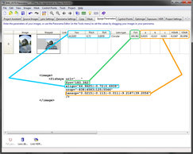
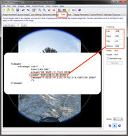

<krpano> <include> <preview> <image> <cube> <cubestrip> <sphere> <cylinder> <flat> <fisheye> <depthmap> </image> <view> <area> <display> <control> <cursors> <autorotate> <plugin> <layer> <layer> ... </layer> <hotspot> <style> <events> <action> <contextmenu> <network> <memory> <security> <textstyle> <data> <scene> <set> <debug> </krpano>
<xmlelement name="..." ... />
<xmlelement url="..." ... />
<xmlelement ... devices="..."> <childrenelement ... /> ... </xmlelement>
| flash html5 | Use only in the krpano Flash viewer. Use only in the krpano HTML5 viewer. |
| desktop normal tablet mobile handheld | Use only on desktop devices. Use only on desktop and tablet devices. Use only on tablet devices. Use only on mobile devices. Use only on mobile and tablet devices. |
| mobilevr | Use only in dedicated VR browsers (browsers that are itself also running in VR, e.g. the Oculus Browser or Firefox Reality). |
| css3d | Use only when CSS3D-Transforms are available. |
| webgl | Use only when WebGL is available. |
| multiressupport | Use only when the browser is capable for multires. |
| panovideosupport | Use only when the browser is capable for panoramic video. |
| fullscreensupport | Use only when the Fullscreen mode is supported. |
| depthmapsupport | Use only when Depthmaps are supported. |
| fractionalscaling | Use only when a fractional page-scale or pixelratio is set. |
| mouse | Use only on devices with mouse support. |
| touch | Use only on devices with Multi-Touch support. |
| ios | Use only on iOS devices (iPhone, iPod, iPad). |
| ios### | Use only when the iOS version is equal or higher than ###. |
| iosdesktop | Use only on iOS devices in Desktop mode. |
| iphone ipod ipad | Use only on the iPhone (and iPod Touch). Use only on the iPod Touch. Use only on the iPad. |
| android | Use only on Android devices. |
| androidstock | Use only in the old 'stock' (=WebKit-based) Android browser. Newer Android browsers are based on Chrome. |
| chrome chromemobile firefox ie edge newedge safari | Use only in the Chrome browser Use only in the Mobile Chrome browser (Android, Silk) Use only in the Firefox browser. Use only in the Internet Explorer browser. Use only in the Microsoft Edge browser. Use only in the New Chrome-based Edge browser. Use only in the Safari browser. |
| iframe | Use only when running inside an iFrame. |
| standalone | Use only in the Standalone Flashplayer. |
| windows mac linux | Use only on Windows systems. Use only on Mac OSX systems. Use only on Linux systems. |
devices="html5"
devices="flash"
devices="desktop"
devices="mobile"
devices="tablet"
devices="ios"
devices="android"
devices="ios8.0" = iOS 8.0 or higher
devices="androidstock" = older android devices
devices="flash|webgl" = systems with fisheye-distortion support
devices="flash.or.webgl" (new syntax)
<xmlelement attribute.typedef="..." ... />
<xmlelement attribute.devicecheck="..." ... />
scale.normal="1.0" (the same as: scale.desktop.or.tablet="1.0")
scale.mobile="0.5"
url.flash="plugin.swf"
url.html5="plugin.js"
videourl.desktop="video-high-profile.mp4"
videourl.mobile.or.tablet="video-baseline-profile.mp4"
width.desktop="200"
width.tablet="150"
width.mobile="100"
visible.fullscreensupport="true"
visible.no-fullscreensupport="false"
visible.html5.and.webgl.or.flash="true"
visible.html5.and.no-webgl="false"
<xmlelement ... if="condition"> <childrenelement ... /> ... </xmlelement>
embedpano({..., initvars:{design:"flat"}, ...});
In the xml file:
<include url="design_default.xml" if="design == default" /> <include url="design_flat.xml" if="design == flat" />
<style name="stylename" attributes ... />
<xmlelement ... style="stylename" ... />
<style name="spotstyle" url="spotimage.png" />
<hotspot name="spot1" style="spotstyle" ... />
<hotspot name="spot2" style="spotstyle" ... />
<xmlelement attribute="get:variable" ... />
<xmlelement attribute="calc:expression" ... />
<settings width="100" height="50" />
...
<layer ...
width="get:settings.width"
height="calc:settings.height * 2"
/>
<include url="..." />
<include url="path/name.xml" />
<include url="settings.xml" />
<include url="skin/skin.xml" />
<include url="%VIEWER%/global.xml" />
<krpano version="1.20.1" onstart="" basedir="%FIRSTXML%" bgcolor="" idletime="0.5" strict="false" showerrors="true" logkey="true" debugmode="false" debugkeys="true" debugjsactions="false" debugjsplugins="false" > ... </krpano>
| Attribute name | Full variable name | Type | Default value |
| version | xmlversion | String | "1.20.1" |
|---|---|---|---|
| Information about the krpano version that was used for creating the xml file. This is mainly only an information for orientation, but it should be still defined to allow handling potential compatibility-related version changes. | |||
| Attribute name / Full variable name | Type | Default value | |
| onstart | Action Event | ||
| The onstart event will be called directly at the start after the xml loading and parsing. | |||
| Attribute name / Full variable name | Type | Default value | |
| basedir | String | "%FIRSTXML%" | |
|
The basedir setting defines the base directory for all following loadpano() action calls. This can be a relative or an absolute path and it's also possible to use the url placeholders here. The defaultvalue is %FIRSTXML% and that means that all relative xml paths of all following loadpano() action calls are relative to the first loaded xml file. |
|||
| Attribute name / Full variable name | Type | Default value | |
| bgcolor | String | ||
The viewer background color.
That background color can be only seen before a pano image will be loaded or when
using partial panos / flat images that are not covering the full view.
|
|||
| Attribute name / Full variable name | Type | Default value | |
| idletime | Number | 0.5 | |
| The time in seconds without any user-interaction before calling the onidle event. | |||
| Attribute name / Full variable name | Type | Default value | |
| strict | Boolean | false | |
|
Enable or disable the 'strict mode' of the expression parser. When enabled variables will no longer 'automatically' resolve to their value inside expressions. This avoids accidentally mix-ups between variables and strings. Additionally some special backward-compatibility workarounds (like when comparing empty %N parameters) will be disabled. See also here: Strict / non-strict comparisons |
|||
| Attribute name / Full variable name | Type | Default value | |
| showerrors | Boolean | true | |
|
Set if the krpano output/log window should get opened automatically when an error happens to show the error message to the user. Note - When using the Branding Free License the default value will be false. |
|||
| Attribute name / Full variable name | Type | Default value | |
| logkey | Boolean | true | |
|
Enable or disable the keyboard key that will show or hide the krpano output/log window. The location on the keyboard - always the top-left most key below the ESC-key (independent of the keyboard-language or keyboard-mapping): Note - When using the Branding Free License the default value will be false. |
|||
| Attribute name / Full variable name | Type | Default value | |
| debugmode | Boolean | false | |
|
Enable or disable the special debug-mode. When enabled:
|
|||
| Attribute name / Full variable name | Type | Default value | |
| debugkeys | Boolean | true | |
|
Enable or disable the special debug-keyboard-keys.
These keys are only active when
the debugmode setting is enabled
and when the krpano log is currently opened. The debug-keys:
|
|||
| Attribute name / Full variable name | Type | Default value | |
| debugjsactions | Boolean | false | |
|
Allow browser-debugging of type="Javascript" <action> code. With that enabled, Javascript errors will not get captured by krpano and will be normally processed by the browser. This can help during development, e.g. for locating an error, but for normal usage this setting should be kept disabled! |
|||
| Attribute name / Full variable name | Type | Default value | |
| debugjsplugins | Boolean | false | |
|
Allow browser-debugging of Javascript-krpano-plugins. With that enabled, Javascript errors will not get captured by krpano and will be normally processed by the browser. This can help during development, e.g. for locating an error, but for normal usage this setting should be kept disabled! |
|||
<preview type="" url="previewpano.jpg" striporder="LFRBUD" />
| Attribute name | Full variable name | Type | Default value |
| type | preview.type | String | |
|---|---|---|---|
|
Set the panoramic type of the preview image. Possible settings:
When the main <image> is a partial pano, then the preview pano will use automatically the same hfov / vfov / voffset settings. |
|||
| Attribute name | Full variable name | Type | Default value |
| url | preview.url | String | |
|
The url / path to the preview image. This can be a spherical, cylindrical or a cubestrip (1x6, 6x1, 3x2 or 2x3) image. When the main <image> is a partial pano, then the preview pano will use automatically the same hfov / vfov / voffset settings. |
|||
| Attribute name | Full variable name | Type | Default value |
| striporder | preview.striporder | String | "LFRBUD" |
| Defines the order of the images in the cubestrip image. | |||
<preview url="preview.jpg" />
<preview type="grid(CUBE,16,16,512,0xCCCCCC,0xFFFFFF,0x999999);" />
<image>
<cube url="pano_%s.jpg" />
</image>
<image>
<cube url="pano_%s_%l_%v_%h.jpg"
multires="TILESIZE,LEVELSIZE1,LEVELSIZE2,..."
/>
</image>
<image tilesize="..."> <level tiledimagewidth="..." tiledimageheight="..."> <cube url="..._%s_%v_%h.jpg" /> </level> <level ...> <cube ... /> </level> ... </image>
<image stereo="true" stereolabels="1|2"> <cube url="pano_%t_%s.jpg" /> </image>
<image>
<cubestrip url="pano.jpg" />
</image>
<image prealign="0|0|0"> <cubestrip url="pano.jpg" striporder="LFRBUD" /> </image>
<image> <sphere url="pano.jpg" /> <cylinder url="pano.jpg" /> <flat url="pano.jpg" /> </image>
<image hfov="120" vfov="40" voffset="0"> <sphere url="pano.jpg" /> <cylinder url="pano.jpg" /> <flat url="pano.jpg" /> </image>
<image> <sphere url="pano_%l_%v_%h.jpg" multires="TILESIZE,LEVELSIZE1,LEVELSIZE2,..." /> <cylinder url="pano_%l_%v_%h.jpg" multires="TILESIZE,LEVELSIZE1,LEVELSIZE2,..." /> <flat url="pano_%l_%v_%h.jpg" multires="TILESIZE,LEVELSIZE1,LEVELSIZE2,..." /> </image>
<image tilesize="..."> <level tiledimagewidth="..." tiledimageheight="..."> <sphere url="..._%s_%v_%h.jpg" /> <cylinder url="..._%s_%v_%h.jpg" /> <flat url="..._%s_%v_%h.jpg" /> </level> <level ...> <sphere ... /> <cylinder ... /> <flat ... /> </level> ... </image>
For one file that contains both stereo images: <image stereo="true" stereoformat="TB"> <sphere url="pano.jpg" /> <cylinder url="pano.jpg" /> <flat url="pano.jpg" /> </image> For separated left/right image files: <image stereo="true" stereolabels="1|2"> <sphere url="pano_%t.jpg" /> <cylinder url="pano_%t.jpg" /> <flat url="pano_%t.jpg" /> </image> For Multi-Resolution: <image stereo="true" stereolabels="1|2"> <sphere url="pano_%t_%l_%v_%h.jpg" multires="TILESIZE,LEVELSIZE1,LEVELSIZE2,..." /> <cylinder url="pano_%t_%l_%v_%h.jpg" multires="TILESIZE,LEVELSIZE1,LEVELSIZE2,..." /> <flat url="pano_%t_%l_%v_%h.jpg" multires="TILESIZE,LEVELSIZE1,LEVELSIZE2,..." /> </image>
<image> <sphere url="plugin:video" /> <cylinder url="plugin:video" /> <flat url="plugin:video" /> </image> <plugin name="video" url.html5="videoplayer.js" url.flash="videoplayer.swf" videourl="video.mp4|video.webm" />
<image>
<fisheye url="fisheye.jpg"
fov="180.0"
align="yaw|pitch|roll"
crop="left|right|top|bottom"
lenscp="a|b|c|d|e"
/>
</image>
<image stereo="true" stereoformat="TB"> <fisheye url="fisheye.jpg" fov="180.0" align="yaw|pitch|roll" crop="left|right|top|bottom" lenscp="a|b|c|d|e" /> </image>
<image>
<fisheye url="plugin:video" />
</image>
<plugin name="video"
url.html5="videoplayer.js"
url.flash="videoplayer.swf"
videourl="video.mp4|video.webm"
/>
| Attribute name | Full variable name | Type | Default value |
| type | image.type | String | |
|---|---|---|---|
|
The type of the panorama image. Available values:
|
|||
| Attribute name | Full variable name | Type | Default value |
| hfov | image.hfov | Number | |
| Defines the horizontal field of view (hfov) of the pano image in degrees. The default value is 360 for all pano types except for flat panos, for flat panos the default is 1.0. | |||
| Attribute name | Full variable name | Type | Default value |
| vfov | image.vfov | Number | |
|
Defines the vertical field of view (vfov) of the pano image in degrees. By default (when no value was set), this value will be calculated automatically by using the hfov, the type of the pano and the side aspect of the pano image. |
|||
| Attribute name | Full variable name | Type | Default value |
| voffset | image.voffset | Number | 0.0 |
|
Defines the vertical offset of the pano image in degrees. By default the pano image will be vertically centered. This means the viewing range will be from -hfov/2 to +hfov/2 and from -vfov/2 to +vfov/2. Now when using a partial pano image where the horizon is not in the middle of image (not at 0 degree), then this image will be displayed distorted. The voffset can be used to shift the image up or down to center it correctly. How to get the correct voffset value: When the vertical from-to range of the pano image is known, then it can be calculated: voffset = (vfov_min + vfov_max) / 2 e.g. for a 240x90 pano with the field of view from -70° (up) to +20° (down): vfov_min = -70 vfov_max = +20 voffset = (-70 + 20) / 2 = -25or see the result for a 360x180 pano with -90 to +90: vfov_min = -90 vfov_max = +90 voffset = (-90 + 90) / 2 = 0.0 When the vertical range is unknown - just try out some values (negative and positive ones in the range from -90 to +90). Additionally it can be helpful here to set <view limitview="off" />in the xml to allow viewing the whole partial image without viewing limitations. |
|||
| Attribute name | Full variable name | Type | Default value |
| prealign | image.prealign | String | |
|
With the prealign setting the pano image itself can be aligned / rotated. This can be used to correct miss-aligned pano images. The syntax: prealign="X|Y|Z"where X, Y, Z defines the rotation about these axis in degrees. The prealign setting rotates only to the pano-image itself, but by using hotspot[name].prealign=true it would be possible to rotate certain hotspots as well. |
|||
| Attribute name | Full variable name | Type | Default value |
| cube.multires sphere.multires cylinder.multires flat.multires |
image.cube.multires image.sphere.multires image.cylinder.multires image.flat.multires |
String String String String |
|
|
Define the tile- and level-sizes (short syntax). Syntax: multires="TILESIZE,LEVELSIZE1,LEVELSIZE2,LEVELSIZE3,..."
multires="512,2048x1024,4096x2048,8192x4096,16384x8192" |
|||
| Attribute name | Full variable name | Type | Default value |
| multiresthreshold | image.multiresthreshold | Number | 0.025 |
| The multiresthreshold value controls, depending on the fov/zoom, when to switch from one multi-resolution level to the next one. Suitable values are from -1.0 to +1.0. | |||
| Attribute name | Full variable name | Type | Default value |
| baseindex | image.baseindex | int | 1 |
|
The index base (numbering start) for the tile- and level-indicies. Used for generating the tile-filenames based on the placeholder. |
|||
| Attribute name | Full variable name | Type | Default value |
| tilesize | image.tilesize | int | |
| Define the tile-size for multires images (long syntax). | |||
| Attribute name | Full variable name | Type | Default value |
| cubelabels | image.cubelabels | String | "l|f|r|b|u|d" |
| The labels for the %s cube side url placeholder. The default labels are l|f|r|b|u|d (left, front, right, back, up, down). | |||
| Attribute name | Full variable name | Type | Default value |
| cubestrip.striporder | image.cubestrip.striporder | String | "LFRBUD" |
| Defines the order of the images in the cubestrip image. | |||
| Attribute name | Full variable name | Type | Default value |
| cubemapmode cubemapsize |
image.cubemapmode image.cubemapsize |
Boolean int |
false 2048 |
|
By default krpano uses internally for every tile an separate texture for rendering.
When enabling the cubemapmode setting,
internally only one large cubemap texture will be used and the tiles be rendered into it.
On very draw-call limited systems, this can improve the rendering performance. When using cubical depthmap panos with rendermode=3dmodel this rendering mode will be used too automatically (an internal requirement). In this mode the maximum cube-size is limited to the given cubemapsize setting. Larger images will get automatically downscaled to that size. |
|||
| Attribute name | Full variable name | Type | Default value |
| stereo stereolabels stereoformat stereooffset |
image.stereo image.stereolabels image.stereoformat image.stereooffset |
Boolean String String Number |
false "1|2" "TB" 0.0 |
|
Enables the usage of stereo images. When using cube images, then the image urls should contain a %t placeholder. This placeholder will be replaced by the values from the stereolabels setting. For the left image the first value will be used and for the right image the second one. For spherical or cylindrical images or videos it is possible to use 'frame-packed' stereo images. The stereoformat setting defines the packing order:
Example - stereoscopic cube image:
<image stereo="true" stereolabels="1|2"> Example - stereoscopic panoramic video:
<image stereo="true" stereoformat="TB"> The stereooffset setting can be used to adjust/align the stereo images. Technically this rotates the left/right images horizontally apart or together by the given value in degrees. Can be used to correct wrong-aligned stereo-images or to change the stereo-focal-plane. |
|||
| Attribute name | Full variable name (HTML5 only) | Type | Default value |
| sphere.mapping | image.sphere.mapping | String | |
|
Define the mapping / projection of the spherical input image. Possible settings:
|
|||
| Attribute name | Full variable name | Type | Default value |
| fisheye.fov fisheye.align fisheye.crop fisheye.lenscp |
image.fisheye.fov image.fisheye.align image.fisheye.crop image.fisheye.lenscp |
Number String String String |
180.0 "y|p|r" "l|r|t|b" "a|b|c|d|e" |
|
Fisheye image support (HTML5 and WebGL only). For correctly straighten and aligning the fisheye image, it's necessary to know some parameters about it. A good tool for getting these parameters is PTGUI. Fisheye settings:
PTGUI Screenshots for getting the fisheye parameters:   |
|||
| Attribute name | Full variable name | Type | Default value |
| mjpegstream | image.TYPE.mjpegstream | String | |
|
MJPEG image streaming over HTTP support (HTML5 and WebGL only). With this setting it's possible to use HTTP MJPEG video streams as source for the pano image. The supported images types are: <sphere>, <cylinder> and <flat> and <fisheye>. The image url needs to point directly to to MJPEG stream source. Possible settings:
Browser support:
|
|||
| Attribute name | Full variable name | Type | Default value |
| ox oy oy |
image.ox image.oy image.oz |
Number Number Number |
0 0 0 |
|
A 3D offset / translation for the pano image.
Can be used to place panos in 3D space. For usage with depthmaps and animated 3D-transitions. The pano will be viewed from its center (which means normal, undistorted viewing) when the view.tx/ty/tz coordinates are the same as the image.ox/oy/oz coordinates. |
|||
| Attribute name | Full variable name | Type | Default value |
| frames frame |
image.frames image.frame |
int int |
1 1 |
|
Current frame and number of frames of the pano. It's possible to use several frames for a pano image, there the %f placeholder must be used in the image urls. That placeholder will be replaced with the current set frame number. When changing the frame number, the tiles from that frame will get loaded. |
|||
| Full variable name | Type | Default value | |
| image.loadstate | int | 0 | |
The current loading state of the image:
|
|||
| Full variable name (read only) | Type | Default value | |
| image.level.count | int | 0 | |
| The count / number of all image level elements. | |||
| Attribute name | Full variable name | Type | Default value |
| level[#].tiledimagewidth level[#].tiledimageheight | image.level[#].tiledimagewidth image.level[#].tiledimageheight | int int |
|
| The full / total size of the tiled image for this level. | |||
| Attribute name | Full variable name | Type | Default value |
| level[#].tilesize | image.level[#].tilesize | int | |
| This setting will overrule the main image.tilesize setting for this level. | |||
| Attribute name | Full variable name | Type | Default value |
| level[#].aspreview | image.level[#].aspreview | Boolean | false |
|
Use this level as preview image. This also forces the whole level to be fully loaded. |
|||
<image ... ox="0" oy="0" oz="0"> ... <depthmap> </image>
<depthmap url="..." enabled="true" rendermode="depthmap" background="none" scale="1.0" offset="0.0" subdiv="" />
| Attribute name | Full variable name | Type | Default value |
| url | depthmap.url | String | |
|---|---|---|---|
|
The path/url to the depthmap file. (see also the url notes) Supported image file types: JPG, PNG and GIF. Supported 3D-object file types: STL (.stl) and DEPTH (.depth). When the server setup doesn't allow .stl or .depth file extensions, it would be possible to add '.txt' at the end, e.g. '.depth.txt'. or '.stl.txt'. |
|||
| Attribute name | Full variable name | Type | Default value |
| enabled | depthmap.enabled | Boolean | true |
|
Enable or disable the depthmap rendering mode. Can be changed also anytime dynamically at runtime. |
|||
| Attribute name | Full variable name | Type | Default value |
| rendermode | depthmap.rendermode | String | |
The rendermode setting defines how to use 3D-models as depthmap:
When not set, the default setting depends on the display.depthmaprendermode setting (which is "depthmap" by default). This setting can not be changed at runtime as it controls how the depthmap gets 'loaded'. |
|||
| Attribute name | Full variable name | Type | Default value |
| background | depthmap.background | String | "none" |
|
Render something at the 'background' behind the depthmap 3D-model,
e.g. to fill empty / undefined areas from the 3D-model. Works only when using a 3D-model as depthmap and rendermode="3dmodel". Available settings:
|
|||
| Attribute name | Full variable name | Type | Default value |
| scale | depthmap.scale | Number | 1.0 |
|
Scale the depthmap 3D representation. Invert the depth: for depthmap images that use black for near and white for far a negative scale value should be used to invert the depth. |
|||
| Attribute name | Full variable name | Type | Default value |
| offset | depthmap.offset | Number | 0.0 |
|
This is a very important setting for depthmap images -
the value defines the offset from the camera center to the nearest depthmap value. The value to use depends how the depthmap image was created and mapped. Typical values are in the range around 0.06 to 0.30. Here a helper tool: depthmap_helpertool.xml (a xml to include) that allows playing interactively with the offset and scale settings. Here an Example using that tool. |
|||
| Attribute name | Full variable name | Type | Default value |
| subdiv | depthmap.subdiv | Number | |
|
The subdiv setting controls the sub-division of the 3D-model into smaller triangles. The value of the setting defines the maximum length of a triangle edge that is allowed. That means lower values cause smaller and more triangles. That will be good for a more accurate display when using spherical images or optional view fisheye-distortions but also require more rendering power. Defaults: 10 on desktop devices, 17 on mobile and tablet devices. To disable the sub-division use larger values like 1000 or 10000. |
|||
<view hlookat="0.0" vlookat="0.0" camroll="0.0" fovtype="VFOV" fov="90.0" fovmin="1.0" fovmax="179.0" maxpixelzoom="" mfovratio="1.333333" distortion="0.0" distortionfovlink="0.5" stereographic="true" pannini="0.0" architectural="0.0" architecturalonlymiddle="true" limitview="auto" hlookatmin="" hlookatmax="" vlookatmin="" vlookatmax="" rx="0" ry="0" tx="0" ty="0" tz="0" ox="0" oy="0" oz="0" />
| Attribute name | Full variable name | Type | Default value |
| hlookat | view.hlookat | Number | 0.0 |
|---|---|---|---|
|
The horizontal looking direction in spherical coordinates in degrees. The typical range is from -180° to +180°. The value will not wrap around 360° but the view itself will. The value 0.0 points to the center of the pano image. |
|||
| Attribute name | Full variable name | Type | Default value |
| vlookat | view.vlookat | Number | 0.0 |
|
The veritcal looking direction in spherical coordinates in degrees. The typical range is from -90° upward at the zenith down to +90° at the nadir. |
|||
| Attribute name | Full variable name | Type | Default value |
| camroll | view.camroll | Number | 0.0 |
|
The roll / rotation of the view camera in degrees. |
|||
| Attribute name | Full variable name | Type | Default value |
| fovtype | view.fovtype | String | |
|
Defines the type of the field of view that the fov value represents. Possible settings:
Default setting: on desktop devices VFOV, on mobile and tablet devices MFOV. |
|||
| Attribute name | Full variable name | Type | Default value |
| fov | view.fov | Number | 90.0 |
| The current field of view in degrees - from almost 0.0 to 179.0. | |||
| Attribute name | Full variable name (read only) | Type | Default value |
| hfov vfov |
view.hfov view.vfov |
Number Number |
|
|
The current horizonal and vertical fov values. Can values are read-only and can be used only for dynamically checking the current field of view coverage. |
|||
| Attribute name | Full variable name | Type | Default value |
| fovmin | view.fovmin | Number | 1.0 |
|
The minimum fov value, this will limit the zooming into the pano. Note - maxpixelzoom setting can be used instead! |
|||
| Attribute name | Full variable name | Type | Default value |
| fovmax | view.fovmax | Number | 179.0 |
|
The maximum fov value, this will limit zooming out of the pano. |
|||
| Attribute name | Full variable name | Type | Default value |
| maxpixelzoom | view.maxpixelzoom | Number | |
|
The maximum pixel zoom factor of the pano image. This will limit the fov automatically depending on the pano resolution and the current viewing window, e.g. 1.0 = limit to 100% zoom, no pixel scaling of the source image will be visible. Note - when set, this setting will overrule the fovmin setting, the fovmin value will be dynamically updated in this case. |
|||
| Attribute name | Full variable name | Type | Default value |
| mfovratio | view.mfovratio | Number | 1.333333 |
| The size ratio for the maximum screen size calculation when using the fovtype=MFOV setting. By default the ratio of a 4:3 screen (4/3 = 1.333) will be used. | |||
| Attribute name | Full variable name | Type | Default value |
| distortion fisheye (old name) |
view.distortion view.fisheye (old name) |
Number Number |
0.0 0.0 |
|
Fisheye distortion effect (0.0 - 1.0). This value contolls the interpolation between the normal rectiliniear view and the distorted fisheye view. 0.0 = no distortion / rectiliniear 1.0 = full distortion There are two fisheye modes: - normal (view.stereographic="false") - stereographic (view.stereographic="true") |
|||
| Attribute name | Full variable name | Type | Default value |
| distortionfovlink fisheyefovlink (old name) |
view.distortionfovlink view.fisheyefovlink (old name) |
Number Number |
0.5 0.5 |
| The fov and fisheye distortion settings are linked together (e.g. when zooming in - the fisheye effect will be reduced). This setting controls the correlation link between these two values: (0.0 - 3.0), 0=linear correlation, 3=dynamic correlation. | |||
| Attribute name | Full variable name | Type | Default value |
| stereographic | view.stereographic | Boolean | true |
|
Enables/disables the stereographic fisheye projection. The 'strongness' of the projection it is controlled by the fisheye setting. The stereographic projection allowes very interessting panorama views like the Little Planet Views. |
|||
| Attribute name | Full variable name | Type | Default value |
| pannini | view.pannini | Number | 0.0 |
|
Apply a Pannini/Vedutismo projection (0.0 to 1.0). The 'strongness' of the projection it is controlled by the fisheye setting. |
|||
| Attribute name | Full variable name | Type | Default value |
| architectural | view.architectural | Number | 0.0 |
|
Architectural projection (0.0 - 1.0). This value interpolates between the current projection (0.0) and the architectural projection mode (1.0). |
|||
| Attribute name | Full variable name | Type | Default value |
| architecturalonlymiddle | view.architecturalonlymiddle | Boolean | true |
| When enabled, the architectural projection will be only used in the 'middle' area of the pano. When looking more up and down then the architectural projection will slowly switch back to normal projection. | |||
| Attribute name | Full variable name | Type | Default value |
| limitview | view.limitview | String | auto |
|
Limit the viewing range in the pano. Possible values:
when the "hlookatmin", "hlookatmax", "vlookatmin", "vlookatmax" values were not set, they will be automatically calculated from the size of the pano image. |
|||
| Attribute name | Full variable name | Type | Default value |
| hlookatmin hlookatmax vlookatmin vlookatmax |
view.hlookatmin view.hlookatmax view.vlookatmin view.vlookatmax |
Number Number Number Number |
|
|
The minimum horizontal looking position in spherical coordinates (-180 .. +180). The maximum horizontal looking position in spherical coordinates (-180 .. +180). (When hlookatmax-hlookatmin=360 then no limiting will be done) The minimum vertical looking position in spherical coordinates (-90 .. +90). The maximum vertical looking position in spherical coordinates (-90 .. +90). |
|||
| Attribute name | Full variable name (read only) | Type | Default value |
| hlookatrange vlookatrange |
view.hlookatrange view.vlookatrange |
Number Number |
|
|
The current maximum horizontal looking range (same as hlookatmax - hlookatmin). The current maximum vertical looking range (same as vlookatmax - vlookatmin). |
|||
| Attribute name | Full variable name | Type | Default value |
| rx ry |
view.rx view.ry |
Number Number |
0.0 0.0 |
|
An additional viewing rotation in screen-space (in degrees). That means that rotation will be applied at the end of all other viewing transformations. Can be used to implement a follow the mouse effect (example) that helps indicating that this is an interactive image. |
|||
| Attribute name | Full variable name | Type | Default value |
| tx ty tz |
view.tx view.ty view.tz |
Number Number Number |
0.0 0.0 0.0 |
|
A 3D translation of the viewpoint. For usage with depthmaps, 3D-viewpoint changes, WebVR position tracking and animated 3D-transitions. The pano will be viewed from its center (which means normal, undistorted viewing) when the view.tx/ty/tz coordinates are the same as the image.ox/oy/oz coordinates. |
|||
| Attribute name | Full variable name | Type | Default value |
| ox oy oz |
view.ox view.oy view.oz |
Number Number Number |
0.0 0.0 0.0 |
|
An additional 3D translation offset of the viewpoint.
But the viewing rotation will be still from the non-offset point. This can be used together with depthmaps to make a kind of 'dollhouse' effect. |
|||
| Full variable name (read only) | Type | Default value | |
| view.dir.x view.dir.y view.dir.z |
Number Number Number |
0.0 0.0 0.0 |
|
| A 3D unit-vector that points into the current looking direction. | |||
<view hlookat="0" vlookat="0" fov="80" />
<view hlookat="0"
vlookat="90"
distortion="1.0"
fov="150"
fovmax="150"
/>
<view hlookat="0"
vlookat="0"
maxpixelzoom="1.0"
limitview="fullrange"
/>
| Attribute name | Full variable name | Type | Default value |
| mode | area.mode | String | "align" |
|---|---|---|---|
|
Select the area positioning / sizing mode. Possible settings: "align" or "border". Align mode: <area mode="align" align="lefttop" x="0" y="0" width="100%" height="100%" /> Border padding mode: <area mode="border" left="0" top="0" right="0" bottom="0" /> |
|||
| Attribute name | Full variable name | Type | Default value |
| align | area.align | String | "lefttop" |
|
Alignment / origin-point position of the area window on the screen. Possible values: lefttop, left, leftbottom, top, center, bottom, righttop, right, rightbottom. |
|||
| Attribute name | Full variable name | Type | Default value |
| x y |
area.x area.y |
String String |
"0" "0" |
|
The x / y distance from the align point to the area window (only for mode=align). This can be either an absolute pixel values or a percent values that are relative to the screen width / height. |
|||
| Attribute name | Full variable name | Type | Default value |
| width height |
area.width area.height |
String String |
"100%" "100%" |
|
The width / height of the area (only for mode=align). This can be either an absolute pixel values or a percent values that are relative to the screen width / height. |
|||
| Attribute name | Full variable name | Type | Default value |
| left top right bottom |
area.left area.top area.right area.bottom |
String String String String |
"0" "0" "0" "0" |
|
The distances from the left / top / right / bottom edges of the screen to the area window (only for mode=border). This can be either an absolute pixel values or a percent values that are relative to the screen width / height. |
|||
| Full variable name (read only) | Type | Default value | |
|
area.pixelx area.pixely area.pixelwidth area.pixelheight |
int int int int |
||
|
The resulting area position (from left-top) and size in pixels (read-only). |
|||
<area align="center" width="640" height="480" />
<area mode="border" top="10" bottom="100" />
<area width="75%" />
<events onresize="fixaspectresize(16,9);" />
<action name="fixaspectresize">
div(aspect, %1, %2);
mul(destwidth, stagewidth, aspect);
copy(destheight, stagewidth);
if(destwidth GT stagewidth,
div(dwnscale, stagewidth, destwidth);
,
set(dwnscale, 1.0);
);
mul(destwidth, dwnscale);
mul(destheight, dwnscale);
if(destheight GT stageheight,
div(dwnscale, stageheight, destheight);
,
set(dwnscale, 1.0);
);
mul(destwidth, dwnscale);
mul(destheight, dwnscale);
sub(destx, stagewidth, destwidth);
sub(desty, stageheight, destheight);
mul(destx, 0.5);
mul(desty, 0.5);
copy(area.x, destx);
copy(area.y, desty);
copy(area.width, destwidth);
copy(area.height, destheight);
</action>
<display autofullscreen="true" stereo="false" stereooverlap="0.0" stereoscale="1.0" monoside="1" anaglyph="false" safearea="auto" mipmapping="auto" loadwhilemoving="auto" framebufferscale="1.0" hotspotvrrendering="natural" hotspotworldscale="2.0" depthmaprendermode="depthmap" depthbuffer="false" surfacesubdiv="100" />
| Attribute name | Full variable name | Type | Default value |
| autofullscreen | display.autofullscreen | Boolean | true |
|---|---|---|---|
| Automatically switch to fullscreen mode when rotating the mobile device to landscape mode (Android only). | |||
| Attribute name | Full variable name | Type | Default value |
| stereo stereooverlap stereoscale |
display.stereo display.stereooverlap display.stereoscale |
Boolean Number Number |
false 0.0 1.0 |
|
Enable the side-by-side Stereo-rendering mode. When the <image> is defined as stereo-image, then the left side will show the left image and the right side the right image. Without stereo-image both sides will show the same image. The stereo-rendering mode can be used for VR displays. The WebVR plugin will enable this mode automatically when entering the VR mode. The stereooverlap setting defines the overlapping of the left and right images: 0.0=no overlap, 1.0=full overlap. The WebVR plugin will use this setting for the IPD (Interpupillary distance) and lens settings. The stereoscale setting defines the horizontal scaling:
|
|||
| Attribute name | Full variable name | Type | Default value |
| monoside | display.monoside | int | 1 |
| Define which side from stereo-images should be used for the normal monoscopic rendering: 1 = left, 2 = right. | |||
| Attribute name | Full variable name | Type | Default value |
| anaglyph | display.anaglyph | Boolean | false |
|
Enable the 3D-Anaglyph (red/cyan) Stereo-rendering mode. |
|||
| Attribute name | Full variable name | Type | Default value |
| safearea | display.safearea | String | auto |
Set how the 'safe-area' of the device display should be handled:
Note - to place a layer outside the safe-area use set the <layer> setting safearea=false. |
|||
| Variable name | Type | Default value | |
| display.safearea_inset | Object | null | |
|
When the display of the device has a 'safe-area' and the browser supports the safe-area-inset CSS variables,
then this variable will be an Object with information about that safe-area. Otherwise it will be null. When set, the Object has these member variables: • l - left safe-area-inset • t - top safe-area-inset • r - right safe-area-inset • b - bottom safe-area-inset When the value of one of these variables is positive, then this is the safearea size outside of the krpano viewport. When it is negative, then the safearea is inside the viewport. These values can change anytime when the device will be rotated, so they should be used only in the onresize event. |
|||
| Attribute name | Full variable name | Type | Default value |
| mipmapping | display.mipmapping | String | "auto" |
|
Define if mipmapping should be used when displaying panos with WebGL. Mipmapping can give a better visual quality and reduce aliasing. Technically mipmapping is only possible on images/tiles that have power-of-two sizes.
|
|||
| Attribute name | Full variable name | Type | Default value |
| loadwhilemoving | display.loadwhilemoving | String | |
Control the tile reloading during movement (panning, zooming).
The loading and adding of new tiles can interrupt smooth movements on slow devices.
|
|||
| Attribute name | Full variable name | Type | Default value |
| framebufferscale | display.framebufferscale | Number | 1.0 |
|
Adjust / scale the size of the WebGL frame buffer. A smaller number mean a lower resolution and fewer pixel to calculate. This could be used on slower mobile devices to increase the rendering performance. |
|||
| Attribute name | Full variable name | Type | Default value |
| hotspotvrrendering | display.hotspotvrrendering | String | "natural" |
|
Define the appearance of non-distorted hotspots in VR mode. Possible settings:
|
|||
| Attribute name | Full variable name | Type | Default value |
| hotspotworldscale | display.hotspotworldscale | Number | 2.0 |
|
A global scale factor for all hotspots. By default the hotspot-sizes use a double unit scale (2x) compared to all the other krpano 3D coordinates. That's required of the initial definition of 1000 width/height units with 1000 depth units should result in 90 degree field-of-view coverage. For using the same units for the hotspot-sizes and the 3D coordinates, then either the hotspotworldscale setting can be set to 1.0 or the individual hotspot scale to 0.5. |
|||
| Attribute name | Full variable name | Type | Default value |
| depthmaprendermode | display.depthmaprendermode | String | "depthmap" |
|
Define the default rendering mode when using 3D-models as depthmap. Can be defined also individually per pano by the depthmap.rendermode setting. Possible settings:
|
|||
| Full variable name | Type | Default value | |
| display.havedepthmap | Boolean | false | |
| A state variable that reports if the current pano is using a depthmap. | |||
| Attribute name | Full variable name | Type | Default value |
| depthbuffer | display.depthbuffer | Boolean | false |
|
Manually enable the use of the depth-buffer for rendering
(when using Depthmap-panos it would be enabled automatically). Using the depth-buffer would be neccesary when using hotspots with their depthbuffer setting enabled. When enabled the hotspots can intersect other hotspots or the depthmap-geometry in 3D-space. |
|||
| Attribute name | Full variable name | Type | Default value |
| surfacesubdiv | display.surfacesubdiv | int | 100 |
|
When rendering non-flat surfaces, e.g. spherical or cylindrical panos, fisheye-distorted
panos or depthmapped-panos, krpano internally needs to subdivide the surface of the pano
into many smaller parts for rendering. This settings control how much the surface should be subdivided. Large settings means more subdivision and so smaller parts and more accurate rendering but therefore also more processing-need and slower rendering. Smaller settings mean the opposite: fewer subdivision and less accuracy but therefore faster rendering. |
|||
| Full variable name | Type | Default value | |
| display.iphonefullscreen | int | 0 | |
|
The state of the iPhone Safari-browser landscape fullscreen mode when the pano-webpage is covered or moved-out
by the browsers url- and tab-bars. Possible states (read-only):
Normally this is only a read-only state variable, but by setting this variable to -1 it would be possible to disable that fullscreen handling. The events.oniphonefullscreen event will be sent when this state changes. |
|||
| Full variable name (read only) | Type | Default value | |
| display.currentfps | Number | ||
| The current average framerate. | |||
| Full variable name (read only) | Type | Default value | |
| display.frame | int | ||
| The current frame number. | |||
| Attribute name | Full variable name | Type | Default value |
| showpolys | display.showpolys | Boolean | false |
| Show the polygons of the internal 3D geometry. | |||
<control usercontrol="all" mouse="drag" touch="drag" dragrelative="true" draginertia="0.1" dragfriction="0.9" drag_oldmode="false" movetorelative="true" movetoaccelerate="1.0" movetospeed="10.0" movetofriction="0.8" movetoyfriction="1.0" invert="false" keybaccelerate="0.5" keybspeed="10.0" keybfriction="0.9" keybinvert="false" keybfovchange="0.75" mousefovchange="1.0" fovspeed="3.0" fovfriction="0.9" zoomtocursor="false" zoomoutcursor="true" disablewheel="false" touchzoom="true" keycodesleft="37" keycodesright="39" keycodesup="38" keycodesdown="40" keycodesin="" keycodesout="" keydownrepeat="true" bouncinglimits="false" />
| Attribute name | Full variable name | Type | Default value |
| usercontrol | control.usercontrol | String | all |
|---|---|---|---|
User controls for changing the pano view:
|
|||
| Attribute name | Full variable name | Type | Default value |
| mouse touch |
control.mouse control.touch |
String String |
drag drag |
|
Set the control mode for the mouse and touch usage. Available settings:
|
|||
| Attribute name | Full variable name | Type | Default value |
| dragrelative | control.dragrelative | Boolean | true |
|
|||
| Attribute name | Full variable name | Type | Default value |
| draginertia | control.draginertia | Number | 0.1 |
| The inertia of the dragging control. The higher the value, the fewer the momentum of the view rotation when releasing the control. | |||
| Attribute name | Full variable name | Type | Default value |
| dragfriction | control.dragfriction | Number | 0.9 |
| The friction of the view rotation momentum of the dragging control mode. The lower the value, the quicker the movement will stop. | |||
| Attribute name | Full variable name (HTML5 only) | Type | Default value |
| drag_oldmode | control.drag_oldmode | Boolean | false |
| In version 1.19 the behavior of the dragging control was slightly changed. Due these changes the speed and momentum is slightly different. By enabling this setting the old mode can be used. | |||
| Attribute name | Full variable name | Type | Default value |
| movetorelative | control.movetorelative | Boolean | true |
|
|||
| Attribute name | Full variable name | Type | Default value |
| movetoaccelerate | control.movetoaccelerate | Number | 1.0 |
| The movement acceleration of the moveto control mode. The higher the value, the quicker the pano will start rotating. | |||
| Attribute name | Full variable name | Type | Default value |
| movetospeed | control.movetospeed | Number | 10.0 |
| The maximum moving / rotating speed of the moveto control mode. | |||
| Attribute name | Full variable name | Type | Default value |
| movetofriction | control.movetofriction | Number | 0.8 |
| The friction of the view rotation momentum of the moving control mode. The lower the value, the quicker the movement will stop. | |||
| Attribute name | Full variable name | Type | Default value |
| movetoyfriction | control.movetoyfriction | Number | 1.0 |
| An additionally friction for the vertical movement in the moveto control mode. Can be used with values lower than 1.0 to make the vertical moving less responsive. | |||
| Attribute name | Full variable name | Type | Default value |
| invert | control.invert | Boolean | false |
| Invert the dragging / panning direction. | |||
| Attribute name | Full variable name | Type | Default value |
| keybaccelerate | control.keybaccelerate | Number | 0.5 |
|
The acceleration of the keyboard / button controlled moving. |
|||
| Attribute name | Full variable name | Type | Default value |
| keybspeed | control.keybspeed | Number | 10.0 |
| The maximum moving speed of the keyboard / button controlled moving. | |||
| Attribute name | Full variable name | Type | Default value |
| keybfriction | control.keybfriction | Number | 0.9 |
| The moving friction of the keyboard / button controlled moving. | |||
| Attribute name | Full variable name | Type | Default value |
| keybinvert | control.keybinvert | Boolean | false |
| Invert the keyboard / button up and down moves. | |||
| Attribute name | Full variable name | Type | Default value |
| keybfovchange | control.keybfovchange | Number | 0.75 |
| The keyboard / button fov (zoom) change in degrees (=zoom sensibility). | |||
| Attribute name | Full variable name | Type | Default value |
| mousefovchange | control.mousefovchange | Number | 1.0 |
| The mouse-wheel fov (zoom) change in degrees (=mouse-wheel zoom sensibility). | |||
| Attribute name | Full variable name | Type | Default value |
| fovspeed | control.fovspeed | Number | 3.0 |
| The maximum fov change / zooming speed (for mouse-wheel and keyboard / button control). | |||
| Attribute name | Full variable name | Type | Default value |
| fovfriction | control.fovfriction | Number | 0.9 |
| The friction of fov (zoom) changes. | |||
| Attribute name | Full variable name | Type | Default value |
| zoomtocursor | control.zoomtocursor | Boolean | false |
| When enabled and zooming in by the mouse-wheel the pano will zoom toward the position of the mouse cursor. | |||
| Attribute name | Full variable name | Type | Default value |
| zoomoutcursor | control.zoomoutcursor | Boolean | true |
| When zoomtocursor and this setting are enabled and zooming out by the mouse-wheel the pano will zoom away from the position of the mouse cursor. Otherwise the pano will zoom away from the center of the screen. | |||
| Attribute name | Full variable name | Type | Default value |
| disablewheel | control.disablewheel | Boolean | false * |
|
Disable mouse-wheel support. Note - when the mouse-wheel support is disabled and the webpage is a 'non-full-height-webpage' then using the mouse-wheel might scroll the page. * The default value depends on mwheel embedding setting. |
|||
| Attribute name | Full variable name | Type | Default value |
| touchzoom | control.touchzoom | Boolean | true |
| Enable or disable the 2-finger zoom gesture. | |||
| Attribute name | Full variable name | Type | Default value |
| keycodesleft | control.keycodesleft | String | "37" |
|
Keyboard keycodes for moving left (separated by commas). Default="37" (arrow left) |
|||
| Attribute name | Full variable name | Type | Default value |
| keycodesright | control.keycodesright | String | "39" |
|
Keyboard keycodes for moving right (separated by commas). Default="39" (arrow right) |
|||
| Attribute name | Full variable name | Type | Default value |
| keycodesup | control.keycodesup | String | "38" |
|
Keyboard keycodes for moving up (separated by commas). Default="38" (arrow up) |
|||
| Attribute name | Full variable name | Type | Default value |
| keycodesdown | control.keycodesdown | String | "40" |
|
Keyboard keycodes for moving down (separated by commas). Default="40" (arrow down) |
|||
| Attribute name | Full variable name | Type | Default value |
| keycodesin | control.keycodesin | String | |
|
Keyboard keycodes for zooming-in (separated by commas). Example: to allow zooming-in with the Shift-key, the A-key, and the Plus-key: keycodesin="16,65,107" |
|||
| Attribute name | Full variable name | Type | Default value |
| keycodesout | control.keycodesout | String | |
|
Keyboard keycodes for zooming-out (separated by commas). Example: to allow zooming-out with the CTRL-key, the Y/Z-keys, and the Minus-key: keycodesout="17,89,90,109" |
|||
| Attribute name | Full variable name | Type | Default value |
| keydownrepeat | control.keydownrepeat | Boolean | true |
| Enable or disable the auto-repeating of the onkeydown event when a key is hold down. The auto-repeating delay and repeating interval depends on the system keyboard settings. | |||
| Attribute name | Full variable name (HTML5 only) | Type | Default value |
| bouncinglimits | control.bouncinglimits | Boolean | false |
| Bounce back when hitting the panning or zooming limits (drag control only). | |||
<control mouse="drag" touch="drag" />
<control mouse="moveto" touch="drag" />
<control zoomtocursor="true" />
<control keycodesin="16,65,107" keycodesout="17,89,90,109" />
<cursors standard="default" dragging="move" moving="move" url="" type="8way" move="" drag="" arrow_l="" arrow_r="" arrow_u="" arrow_d="" arrow_lu="" arrow_ru="" arrow_ld="" arrow_rd="" />
| Attribute name | Full variable name | Type | Default value |
| standard dragging moving |
cursors.standard cursors.dragging cursors.moving |
String String String |
default move move |
|---|---|---|---|
| Select the native CSS mouse cursor for the current state (HTML5 only). | |||
| Attribute name | Full variable name | Type | Default value |
| url | cursors.url | String | |
| Path/url to the cursors images. This image must contain all images for all cursor states. The image for the certain cursor is selected by defining the position and size of a (crop) rectangle. | |||
| Attribute name | Full variable name | Type | Default value |
| type | cursors.type | String | 8way |
|
drag = move/drag 4way = move/drag/arrow_l/arrow_u,arrow_r,arrow_d 8way = all |
|||
| Attribute name | Full variable name | Type | Default value |
| move drag arrow_l arrow_r arrow_u arrow_d arrow_lu arrow_ru arrow_ld arrow_rd |
cursors.move cursors.drag cursors.arrow_l cursors.arrow_r cursors.arrow_u cursors.arrow_d cursors.arrow_lu cursors.arrow_ru cursors.arrow_ld cursors.arrow_rd |
String String String String String String String String String String |
|
|
move = during normal moving (without mouse button down) drag = mouse button down arrow_* = mouse button down and moving in direction |
|||
<autorotate enabled="false" waittime="1.5" accel="1.0" speed="10.0" horizon="0.0" tofov="off" zoomslowdown="true" interruptionevents="userviewchange|layers|keyboard" />
| Attribute name | Full variable name | Type | Default value |
| enabled | autorotate.enabled | Boolean | false |
|---|---|---|---|
| Enable / disable the automatic rotation. | |||
| Attribute name | Full variable name | Type | Default value |
| waittime | autorotate.waittime | Number | 1.5 |
| The time in seconds to wait after the last user-interaction before starting the automatic rotation. | |||
| Attribute name | Full variable name | Type | Default value |
| accel | autorotate.accel | Number | 1.0 |
| The rotation acceleration in degrees/second. | |||
| Attribute name | Full variable name | Type | Default value |
| speed | autorotate.speed | Number | 10.0 |
|
The maximum rotation speed in degrees/second. Use a negative value for a rotation to left. |
|||
| Attribute name | Full variable name | Type | Default value |
| horizon | autorotate.horizon | Number | 0.0 |
|
Move / rotate to the given horizon (0.0 = middle of the pano). Set the value to "off" or any other non-number value to disable it. |
|||
| Attribute name | Full variable name | Type | Default value |
| tofov | autorotate.tofov | Number | NaN |
|
Zoom to the given field of view (fov). Set it to "off" or any other non-number value to disable it. |
|||
| Attribute name | Full variable name | Type | Default value |
| zoomslowdown | autorotate.zoomslowdown | Boolean | true |
| Slow down the autorotation speed relative to the current zoom / field-of-view to get the same visual speed at all zoom distances. | |||
| Attribute name | Full variable name | Type | Default value |
| interruptionevents | autorotate.interruptionevents | String | ... |
|
Define which events will interrupt the autorotation (and also the onidle event). The interruptionevents setting can be a combination of the following strings (combined by | characters):
The default is: interruptionevents="userviewchange|layers|keyboard" |
|||
| Full variable name (read only) | Type | Default value | |
| autorotate.isrotating | Boolean | false | |
| Is the pano currently auto-rotating? | |||
| Full variable name (read only) | Type | Default value | |
| autorotate.ispaused | Boolean | false | |
| Is the auto-rotating currently paused? | |||
| Function name | Type | ||
| autorotate.start() | Action | ||
| Enable and directly start the autorotation now (without autorotate.waittime). | |||
| Function name | Type | ||
| autorotate.stop() | Action | ||
| Stop the current autorotation and disable it. | |||
| Function name | Type | ||
| autorotate.interrupt() | Action | ||
|
Stop/interrupt the current autorotation - same as an user interaction interrupt. The autorotation itself will kept enabled and will start again after waittime seconds without user interaction. | |||
| Function name | Type | ||
| autorotate.pause() | Action | ||
|
Either pause the current autorotation,
or when the autorotation is currently not running, then don't start it as long as it is paused. E.g. could be used when the mouse hovers a hotspot to pause there. | |||
| Function name | Type | ||
| autorotate.resume() | Action | ||
|
Resume a previously paused autorotation. | |||
<autorotate enabled="true" />
<autorotate enabled="true"
waittime="5.0"
speed="-3.0"
horizon="0.0"
tofov="120.0"
/>
... onclick="switch(autorotate.enabled);"
... onclick="autorotate.start();"
<layer>
<plugin>
<plugin name="..." type="image" url="..." keep="false" parent="" visible="true" enabled="true" handcursor="true" maskchildren="false" scalechildren="false" zorder="" capture="true" children="true" preload="false" blendmode="normal" style="" align="" edge="" safearea="true" x="" y="" ox="" oy="" rotate="0.0" width="" height="" scale="1.0" pixelhittest="false" smoothing="true" accuracy="0" alpha="1.0" autoalpha="false" usecontentsize="false" scale9grid="" crop="" onovercrop="" ondowncrop="" mask="" effect="" bgcolor="0x000000" bgalpha="0.0" bgborder="0" bgroundedge="0" bgshadow="" bgcapture="false" onover.addevent="" onhover.addevent="" onout.addevent="" onclick.addevent="" ondown.addevent="" onup.addevent="" onloaded.addevent="" />
<layer name="..." type="image" url="..." keep="false" parent="" visible="true" enabled="true" handcursor="true" maskchildren="false" scalechildren="false" zorder="" capture="true" children="true" preload="false" blendmode="normal" style="" align="" edge="" safearea="true" x="" y="" ox="" oy="" rotate="0.0" width="" height="" scale="1.0" pixelhittest="false" smoothing="true" accuracy="0" alpha="1.0" autoalpha="false" usecontentsize="false" scale9grid="" crop="" onovercrop="" ondowncrop="" mask="" effect="" bgcolor="0x000000" bgalpha="0.0" bgborder="0" bgroundedge="0" bgshadow="" bgcapture="false" onover.addevent="" onhover.addevent="" onout.addevent="" onclick.addevent="" ondown.addevent="" onup.addevent="" onloaded.addevent="" />
| Full variable name (read only) | Type | Default value | |
| plugin.countlayer.count | int | 0 | |
|---|---|---|---|
| The count of all layer / plugin elements. | |||
| Full variable name | Type | Default value | |
| plugin.enabledlayer.enabled | Boolean | true | |
| Enable/disable the whole layer / plugin layer for receiving mouse events. | |||
| Full variable name | Type | Default value | |
| plugin.visiblelayer.visible | Boolean | true | |
| Show/hide the whole layer / plugin layer. | |||
| Full variable name | Type | Default value | |
| plugin.alphalayer.alpha | Number | 1.0 | |
| Controls the transparency / alpha of the whole layer / plugin layer. | |||
| Full variable name (as3 usage only) | Type | Default value | |
| plugin.layerlayer.layer | Sprite | ||
|
Actionscript 3 Sprite object of the layer / plugin layer. | |||
| Attribute name | Full variable name | Type | Default value |
| name | plugin[name].name | String | |
| name | layer[name].name | String | |
| The name of the current layer / plugin element (see the name notes). | |||
| Attribute name | Full variable name (read only) | Type | Default value |
| indexindex | plugin[name].indexlayer[name].index | int | |
| The index of the current layer / plugin element. | |||
| Attribute name | Full variable name | Type | Default value |
| type | plugin[name].type | String | "image" |
| type | layer[name].type | String | "image" |
|
Type of the layer / plugin element. Possible settings:
| |||
| Attribute name | Full variable name | Type | Default value |
| url | plugin[name].url | String | |
| url | layer[name].url | String | |
|
The path/url to the layer / plugin image file. (see also the url notes) Supported file types: JPG, PNG, GIF and SWF (Flash-only). To define different urls for Flash and HTML, the xml device checks should be used: url.flash="plugin.swf url.html5="plugin.js | |||
| Attribute name | Full variable name | Type | Default value |
| keep | plugin[name].keep | Boolean | false |
| keep | layer[name].keep | Boolean | false |
|
Should this layer / plugin element be kept or removed when loading a new pano. See also the loadpano() action. | |||
| Attribute name | Full variable name | Type | Default value |
| visible | plugin[name].visible | Boolean | true |
| visible | layer[name].visible | Boolean | true |
| Visibility of the layer / plugin element. | |||
| Attribute name | Full variable name | Type | Default value |
| enabled | plugin[name].enabled | Boolean | true |
| enabled | layer[name].enabled | Boolean | true |
|
Enables the layer / plugin element to receive mouse events.
When set to "false" then the mouse events will be routed to the underlying elements. | |||
| Attribute name | Full variable name | Type | Default value |
| handcursor | plugin[name].handcursor | Boolean | true |
| handcursor | layer[name].handcursor | Boolean | true |
| Show a hand cursor when mouse is over the layer / plugin element. | |||
| Attribute name | Full variable name | Type | Default value |
| maskchildren | plugin[name].maskchildren | Boolean | false |
| maskchildren | layer[name].maskchildren | Boolean | false |
|
When set to true then all children elements that are outside of the parent element will be clipped / masked out. HTML5 Safari / iOS notes - the when using maskchildren=true on a container element that has rounded edges and shadows (by using the bgroundedge and bgshadow settings) then the children elements will be not clipped on the rounded edges. This is a bug of the Safari browser (Desktop and iOS), all other browsers are fine. | |||
| Attribute name | Full variable name | Type | Default value |
| zorder | plugin[name].zorder | String | |
| zorder | layer[name].zorder | String | |
|
Deep / 'Z' ordering of the layer / plugin elements. This value can be any string or number. All layer / plugin elements with a zorder setting will be sorted by the given value. When nothing is set - then the order is undefined and depends on the loading/finishing order of the browser. Note - this is an important setting for overlapping elements! HTML5 Notes - the zorder should be a value between 0 and 100, no negative values! | |||
| Attribute name | Full variable name | Type | Default value |
| capturecapture | layer[name].captureplugin[name].capture | Boolean | true |
|
This is an additional setting to the enabled setting: When enabled=true and capture=true then the mouse events will be only sent to this layer / plugin, no movement / controlling of the pano is possible. When enabled=true and capture=false then the mouse events will be sent to the layer / plugin and also to all underlying elements, controlling the pano will be still possible. | |||
| Attribute name | Full variable name | Type | Default value |
| childrenchildren | layer[name].childrenplugin[name].children | Boolean | true |
| Enables the children elements of the current layer / plugin element for receiving mouse events. | |||
| Attribute name | Full variable name | Type | Default value |
| preloadpreload | layer[name].preloadplugin[name].preload | Boolean | false |
|
Preload the layer / plugin url before loading the pano and before executing any actions. This
can be used to force some element to be there and ready before everything else starts. Note - the onloaded event doesn't work / can't be used when preloading is enabled! | |||
| Attribute name | Full variable name | Type | Default value |
| blendmodeblendmode | layer[name].blendmodeplugin[name].blendmode | String | "normal" |
|
Blending / mixing mode - possible settings: normal, layer, screen, add, subtract, difference, multiply, overlay, lighten, darken, hardlight, invert. See here for more details about all available blending modes: http://help.adobe.com/.../BlendMode.html And here for some illustrations / examples: http://help.adobe.com/.../DisplayObject.html#blendMode | |||
| Attribute name | Full variable name | Type | Default value |
| align | plugin[name].align | String | |
| align | layer[name].align | String | |
|
Alignment / origin-point position of the layer / plugin element on the screen. Possible values: lefttop, left, leftbottom, top, center, bottom, righttop, right, rightbottom - or - no value (empty or null) When NOT set (the default) no positioning will be done by krpano (useful / necessary for some flash/swf plugins). | |||
| Attribute name | Full variable name | Type | Default value |
| edge | plugin[name].edge | String | |
| edge | layer[name].edge | String | |
|
Edge / anchor-point of the layer / plugin element. Possible values: lefttop, left, leftbottom, top, center, bottom, righttop, right, rightbottom - or - no value (empty or null) When NOT set (the default) the same setting as in the align attribute will be used. | |||
| Attribute name | Full variable name | Type | Default value |
| safearea | plugin[name].safearea | Boolean | true |
| safearea | layer[name].safearea | Boolean | true |
| Should the layer be relative to the safe-area of the display or to the full-display-area. | |||
| Attribute name | Full variable name | Type | Default value |
| x y | plugin[name].x plugin[name].y | String String | |
| x y | layer[name].x layer[name].y | String String | |
|
Distance from the align point to the edge point. This can be an absolute pixel value or a relative (to the screenwidth or screenheight) percent value. Note - for right/bottom aligned elements this distance will be measured from the right/bottom side. | |||
| Attribute name | Full variable name | Type | Default value |
| ox oyox oy | layer[name].ox layer[name].oyplugin[name].ox plugin[name].oy | String String | |
|
Offset / parallel-shift of the layer / plugin element. This values will be added to the x/y values. This can be an absolute pixel value or a relative (to layer / plugin size) percent value. | |||
| Attribute name | Full variable name | Type | Default value |
| rotate | plugin[name].rotate | Number | 0.0 |
| rotate | layer[name].rotate | Number | 0.0 |
| Rotation of the layer / plugin element in degrees. | |||
| Attribute name | Full variable name | Type | Default value |
| width height | plugin[name].width plugin[name].height | String String | |
| width height | layer[name].width layer[name].height | String String | |
|
Destination size of the layer / plugin element - the image will be scaled to that size. This can be an absolute pixel value or a relative (to the screenwidth or screenheight) percent value. When not set - the size of the loaded image will be used. Negative values - when using negative values as size, then the resulting size will be the size of the parent element (or the size of the stage when there is no parent) minus the given negative value. Additionally it's possible to use the special value "prop" to scale an image via width or height by keeping it proportions (e.g. set width or height to a value and the other setting to "prop" - width="500" height="prop"). | |||
| Attribute name | Full variable name | Type | Default value |
|
minwidth maxwidth minheight maxheight minwidth maxwidth minheight maxheight |
layer[name].minwidth layer[name].maxwidth layer[name].minheight layer[name].maxheight plugin[name].minwidth plugin[name].maxwidth plugin[name].minheight plugin[name].maxheight |
int int int int |
0 0 0 0 |
|
Limit the resulting layer size. Only absolute pixel values are possible for these settings. When the value for a min/max setting is 0, it will be disabled/ignored. Dynamic changes of these settings will not trigger an instant update of the layer element. | |||
| Attribute name | Full variable name (read only) | Type | Default value |
| imagewidth imageheightimagewidth imageheight | layer[name].imagewidth layer[name].imageheightplugin[name].imagewidth plugin[name].imageheight | int int | |
| These variables contain the original unscaled pixel size of the loaded image, this information are first available after the onloaded event. | |||
| Attribute name | Full variable name (read only) | Type | Default value |
| pixelwidth pixelheightpixelwidth pixelheight | layer[name].pixelwidth layer[name].pixelheightplugin[name].pixelwidth plugin[name].pixelheight | int int | |
| These variables contain the final pixel size of the element, but note - they don't get updated immediately when changing the normal width/height/scale variables, the update happens after a screen refresh or when calling the updatepos() action. | |||
| Attribute name | Full variable name (read only) | Type | Default value |
| pixelx pixelypixelx pixely | layer[name].pixelx layer[name].pixelyplugin[name].pixelx plugin[name].pixely | int int | |
|
These variables contain the final pixel position of the element, but note - they don't get updated immediately when changing the
align/edge/x/y/ox/oy variables, the update happens after a screen refresh or when calling the updatepos() action. Note - the values can differ between Flash and HTML5 when layering or scaling is involved due different technical implementations. | |||
| Attribute name | Full variable name | Type | Default value |
| scale | plugin[name].scale | Number | 1.0 |
| scale | layer[name].scale | Number | 1.0 |
| Scaling of the layer / plugin element. | |||
| Attribute name | Full variable name (Flash only) | Type | Default value |
| pixelhittestpixelhittest | layer[name].pixelhittestplugin[name].pixelhittest | Boolean | false |
|
Enabling a pixel accurate hit testing which respects the transparency of the image instead of using the bounding box (Flash only). Note - use this setting with care! The pixel accurate hit-test is a much heavier operation than the normal default bounding box check! | |||
| Attribute name | Full variable name (Flash only) | Type | Default value |
| smoothingsmoothing | layer[name].smoothingplugin[name].smoothing | Boolean | true |
| Pixel smoothing when scaling. | |||
| Attribute name | Full variable name | Type | Default value |
| accuracyaccuracy | layer[name].accuracyplugin[name].accuracy | int | 0 |
|
Accuracy of the layer / plugin image positioning: When set to 0 (the default) the pixel positions will be rounded to full pixel values. When set to 1 no rounding of the position values will be done, but then the image can become blurry due this. Note - if accuracy=1 would work depends also on if the browser is supporting sub-pixel-precise CSS coordinates. | |||
| Attribute name | Full variable name | Type | Default value |
| alpha | plugin[name].alpha | Number | 1.0 |
| alpha | layer[name].alpha | Number | 1.0 |
|
Alpha value / transparency of the layer / plugin element. 0.0 = fully transparent, 1.0 = fully visible Note - even when set to 0.0 - the element will be still there and click-able - to hide it completely the visible attribute must be set to false! | |||
| Attribute name | Full variable name | Type | Default value |
| autoalphaautoalpha | layer[name].autoalphaplugin[name].autoalpha | Boolean | false |
| When set to "true", then visible will be automatically set to "false" when alpha is 0.0 and back to "true" when alpha is bigger then 0.0. | |||
| Attribute name | Full variable name (Flash only) | Type | Default value |
| usecontentsizeusecontentsize | layer[name].usecontentsizeplugin[name].usecontentsize | Boolean | false |
| When a .swf file will be loaded, then are two possibilities to determinate its size / dimension - either the size of full canvas of the flash object will be used (usecontentsize=false, the default) - or - only the size of the drawn content there (usecontentsize=true). | |||
| Attribute name | Full variable name | Type | Default value |
| scale9gridscale9grid | layer[name].scale9gridplugin[name].scale9grid | String | |
|
Defines a grid in pixel coordinates that splits the layer / plugin image into 9 segments.
And when scaling the layer / plugin via the width / height / scale values, the 'edge' segments
will be kept unscaled and only the 'middle' segments will be scaled. When using scale9grid, then scalechildren always will be false. Syntax: scale9grid="x-position|y-position|width|height|prescale*"
| |||
| Attribute name | Full variable name | Type | Default value |
| crop onovercrop ondowncrop | plugin[name].crop plugin[name].onovercrop plugin[name].ondowncrop | String String String | |
| crop onovercrop ondowncrop | layer[name].crop layer[name].onovercrop layer[name].ondowncrop | String String String | |
|
Crop / cut out a rectangular area of the source image. Usefull to use only one single image
for serval image elements. onovercrop / ondowncrop - different crop areas for mouse over and mouse button down states. Syntax: crop="x-position|y-position|width|height" | |||
| Attribute name | Full variable name | Type | Default value |
| parent | plugin[name].parent | String | |
| parent | layer[name].parent | String | |
|
Assign the current layer / plugin to be a child element of an other layer / plugin or hotspot element.
The assigned layer / plugin will be aligned inside the parent element. There are two special predefined parent elements:
Syntax: Either use only the name of the parent layer / plugin: parent="name"Or the full path/name of the layer / plugin or hotspot that should be the parent element: parent="layer[name]" parent="hotspot[name]"Or to align the layer / plugin element on the outside or behind the pano area: parent="STAGE" parent="BGLAYER" Note - distorted hotspots can't be used as parent at the moment! | |||
| Attribute name | Full variable name | Type | Default value |
| scalechildren | plugin[name].scalechildren | Boolean | false |
| scalechildren | layer[name].scalechildren | Boolean | false |
| Should a child layer / plugin element, that have been assigned by parent also be scaled when the current layer / plugin element will scaled. | |||
| Attribute name | Full variable name (Flash only) | Type | Default value |
| maskmask | layer[name].maskplugin[name].mask | String | |
|
Use an other layer / plugin or hotspot image as mask. The image should have an alpha channel (e.g. use a .png image for it).
Without alpha channel the bounding box area of the layer / plugin will be used as mask. Syntax: Either use only the name of a other layer / plugin: mask="name"Or the full path/name of the layer / plugin or hotspot that should be used as mask: mask="layer[name]" mask="hotspot[name]" Note - for rendering performance reasons the mask shouldn't not be used with distorted hotspots! HTML5 Notes - for masking children elements that works the same in Flash and HTML5 use the newer maskchildren setting. | |||
| Attribute name | Full variable name (Flash only) | Type | Default value |
| effecteffect | layer[name].effectplugin[name].effect | String | |
|
Apply bitmap effects to the layer / plugin image. That can be any combinations of these effect functions: glow(color,alpha,range,strength); dropshadow(depth,angle,color,range,strength); blur(radius); | |||
| Attribute name | Full variable name | Type | Default value |
| bgcolor | plugin[name].bgcolor | int | 0x000000 |
| bgcolor | layer[name].bgcolor | int | 0x000000 |
| Background color of the container element (only available when type=container). | |||
| Attribute name | Full variable name | Type | Default value |
| bgalpha | plugin[name].bgalpha | Number | 0.0 |
| bgalpha | layer[name].bgalpha | Number | 0.0 |
| Transparency / alpha of the background color of the container element (only available when type=container). | |||
| Attribute name | Full variable name | Type | Default value |
| bgborder | plugin[name].bgborder | String | "0" |
| bgborder | layer[name].bgborder | String | "0" |
|
Add borders around the type=container layer element. Syntax: bgborder="widths color alpha" Parameters:
| |||
| Attribute name | Full variable name | Type | Default value |
| bgroundedge | plugin[name].bgroundedge | String | "0" |
| bgroundedge | layer[name].bgroundedge | String | "0" |
|
Define rounded edges of the container background color shape. A value sets the edge rounding radius in pixels. Four values can be set, one for each edge (separated by space characters). They are given in the order: top-left, top-right, bottom-right, bottom-left. If bottom-left is omitted, it is the same as top-right. If bottom-right is omitted, it is the same as top-left. If top-right is omitted, it is the same as top-left. | |||
| Attribute name | Full variable name | Type | Default value |
| bgshadow | plugin[name].bgshadow | String | |
| bgshadow | layer[name].bgshadow | String | |
|
Add a shadow behind the type=container layer element. Basic Syntax (5 parameters, supported by Flash and HTML5): bgshadow="xoffset yoffset blur color alpha" Advanced Syntax (6 or more parameters, supported only by HTML5): bgshadow="xoffset yoffset blur spread color alpha inset, ..." Parameters:
| |||
| Attribute name | Full variable name | Type | Default value |
| bgcapture | plugin[name].bgcapture | Boolean | false |
| bgcapture | layer[name].bgcapture | Boolean | false |
| Capture mouse events on the background of the container element (only available when type=container and bgalpha > 0.0). | |||
| Attribute name | Full variable name (read only) | Type | Default value |
| loadingloading | layer[name].loadingplugin[name].loading | Boolean | false |
|
A boolean read-only variable that indicates that the layer / plugin is currently loading an image. | |||
| Attribute name | Full variable name (read only) | Type | Default value |
| loadedloaded | layer[name].loadedplugin[name].loaded | Boolean | false |
| A boolean read-only variable that indicates that the layer / plugin has loaded the given image. | |||
| Attribute name | Full variable name (read only) | Type | Default value |
| loadedurlloadedurl | layer[name].loadedurlplugin[name].loadedurl | String | |
| The loadedurl attribute contains the full url of the currently loaded image. | |||
| Attribute name | Full variable name (read only) | Type | Default value |
| hoveringhovering | layer[name].hoveringplugin[name].hovering | Boolean | false |
| A boolean read-only variable that indicates that the mouse cursor it currently over the layer / plugin. | |||
| Attribute name | Full variable name (read only) | Type | Default value |
| pressedpressed | layer[name].pressedplugin[name].pressed | Boolean | false |
| A boolean read-only variable that indicates that the mouse button was pressed on the layer / plugin and is still hold down. | |||
| Attribute name | Full variable name (read only) | Type | Default value |
|
hitx hity hitx hity |
layer[name].hitx layer[name].hity plugin[name].hitx plugin[name].hity |
Number Number |
|
| The relative 'hit-point' of the mouse or touch-point inside the layer when hovering or pressing it. The value range for hitx and hity is from 0.0 to 1.0 and from top-left to bottom-right. | |||
| Attribute name | Full variable name | Type | Default value |
| onover | plugin[name].onover | Action Event | |
| onover | layer[name].onover | Action Event | |
| Actions / functions that will be called when the mouse moves over the layer / plugin element. | |||
| Attribute name | Full variable name | Type | Default value |
| onhover | plugin[name].onhover | Action Event | |
| onhover | layer[name].onhover | Action Event | |
| Actions / functions that will be called in intervals (15 times per second) when the mouse stays over / hovers the layer / plugin element. | |||
| Attribute name | Full variable name | Type | Default value |
| onout | plugin[name].onout | Action Event | |
| onout | layer[name].onout | Action Event | |
| Actions / functions that will be called when the mouse moves out of the layer / plugin element. | |||
| Attribute name | Full variable name | Type | Default value |
| onclick | plugin[name].onclick | Action Event | |
| onclick | layer[name].onclick | Action Event | |
| Actions / functions that will be called when there is a mouse click on the layer / plugin element. | |||
| Attribute name | Full variable name | Type | Default value |
| ondown | plugin[name].ondown | Action Event | |
| ondown | layer[name].ondown | Action Event | |
| Actions / functions that will be called when the mouse button will be pressed down on the layer / plugin element. | |||
| Attribute name | Full variable name | Type | Default value |
| onup | plugin[name].onup | Action Event | |
| onup | layer[name].onup | Action Event | |
| Actions / functions that will be called when the previously pressed mouse button will be released. | |||
| Attribute name | Full variable name | Type | Default value |
| onloaded | plugin[name].onloaded | Action Event | |
| onloaded | layer[name].onloaded | Action Event | |
| Actions / functions that will be called when the loading of the layer / plugin image is done. | |||
| Attribute name | Full variable name | Type | Default value |
| loaderloader | layer[name].loaderplugin[name].loader | ||
|
Flash: Actionscript 3 Loader object of the loaded layer / plugin image. HTML5: HTML Image element. | |||
| Attribute name | Full variable name | Type | Default value |
| spritesprite | layer[name].spriteplugin[name].sprite | ||
|
Flash: Actionscript 3 Sprite object of the layer / plugin element. HTML5: HTML DOM element (div) of the layer / plugin element. | |||
| Add additional events | |||
|
As xml attribute:
eventname.addevent="eventcode"As dynamic call from actions:
layerplugin[name].addevent(eventname, eventcode)hotspot[name].addevent(eventname, eventcode) |
|||
|
Add additional events beside the normal ones. This can be especially helpful when using <style> elements and defining independent events there. So it's possible to use the events from style and also the own ones. Example - when clicking the layer both events will be called: <style name="teststyle" ... onclick.addevent="trace('onclick from the style');" /> <layer name="test" style="teststyle" ... onclick="trace('onclick from the layer');" /> Events added by addevent can not be overwritten or removed. | |||
| Function name | Type | ||
| layer[name].loadstyle(styles)plugin[name].loadstyle(styles) | Action | ||
|
Copy/load the attributes from one or more <style> elements. Parameters:
| |||
| Function name | Type | ||
| layer[name].registercontentsize(width,height)plugin[name].registercontentsize(width,height) | Action | ||
|
The registercontentsize action can be used to set / register the 'original / source / unscaled' size of the layer / plugin element.
By default the imagesize or the size of the swf file will be used - this source size can be changed here. For HTML5 / Javascript Plugins that want to draw custom stuff this function call is necessary to set the source size because Javascript Plugins don't have any information about its size. | |||
| Function name | Type | ||
| layer[name].resetsize()plugin[name].resetsize() | Action | ||
| An action to set the width and height values back to the source size of the loaded image. This can be used after changing the url value to get the size of the new loaded image. | |||
| Function name | Type | ||
| layer[name].updatepos()plugin[name].updatepos() | Action | ||
| Updates / recalculates the position and size of the layer / plugin immediately (normally this will be done automatically with the next screen refresh). After calling this actions the pixelwidth and pixelheight variables will contain the final pixel sizes of the layer / plugin element. | |||
| Function name | Type | ||
| layer[name].changeorigin(align,edge)plugin[name].changeorigin(align,edge) | Action | ||
| An action to change the alignment and edge of a layer / plugin element without changing its current position. The x/y values will be recalculated to keep the current position. | |||
| Function name (plugininterface only) | Type | return | |
| layer[name].getfullpath()plugin[name].getfullpath() | Action | String | |
| A function that returns the full path/name of the layer / plugin element. Because of the return value this action is only callable from the plugin interface. | |||
<layer name="logo"
url="logoimage.png"
align="rightbottom" x="20" y="20"
onclick="openurl('http://...');"
/>
<layer name="imagebar" type="container" width="100%" height="200" align="leftbottom" bgcolor="0x000000" bgalpha="0.5"> <layer name="item1" url="image1.jpg" align="left" x="10" /> <layer name="item2" url="image2.jpg" align="left" x="110" /> <layer name="item3" url="image3.jpg" align="left" x="210" /> </layer>
<hotspot name="..." type="image" url="..." keep="false" renderer="webgl" visible="true" enabled="true" handcursor="true" maskchildren="false" zorder="" zorder2="0.0" capture="true" children="true" blendmode="normal" mipmapping="false" premultiplyalpha="false" style="" ath="0.0" atv="0.0" edge="center" ox="0" oy="0" oref="2" zoom="false" distorted="false" rotationorder="yxz" rx="0.0" ry="0.0" rz="0.0" inverserotation="false" depth="1000" depthbuffer="false" torigin="world" tx="0.0" ty="0.0" tz="0.0" prealign="false" flying="0.0" scaleflying="true" width="" height="" scale="1.0" rotate="0.0" pixelhittest="false" accuracy="1" alpha="1.0" autoalpha="false" usecontentsize="false" scale9grid="" stereo="" crop="" onovercrop="" ondowncrop="" scalechildren="false" onover.addevent="" onhover.addevent="" onout.addevent="" ondown.addevent="" onup.addevent="" onclick.addevent="" onloaded.addevent="" />
<hotspot name="..." keep="false" visible="true" enabled="true" handcursor="true" capture="true" blendmode="normal" style="" alpha="1.0" autoalpha="false" polyline="false" fillcolor="0xAAAAAA" fillalpha="0.5" borderwidth="3.0" bordercolor="0xAAAAAA" borderalpha="1.0" subdiv="true" onover="" onhover="" onout="" ondown="" onup="" onclick="" onloaded="" > <point ath="..." atv="..." /> <point ath="..." atv="..." /> <point ath="..." atv="..." /> ... </hotspot>
| Full variable name (read only) | Type | Default value | |
| hotspot.count | int | 0 | |
|---|---|---|---|
| The count / number of all hotspot elements. | |||
| Full variable name | Type | Default value | |
| hotspot.enabled | Boolean | true | |
| Enable/disable the whole hotspots layer for receiving mouse events. | |||
| Full variable name | Type | Default value | |
| hotspot.visible | Boolean | true | |
| Show/hide the whole hotspots layer. | |||
| Full variable name | Type | Default value | |
| hotspot.alpha | Number | 1.0 | |
| Controls the transparency / alpha of the whole hotspots layer. | |||
| Full variable name (as3 usage only) | Type | Default value | |
| hotspot.layer | Sprite | ||
|
Actionscript 3 Sprite object of the hotspots layer. |
|||
| Attribute name | Full variable name | Type | Default value |
| name | hotspot[name].name | String | |
| The name of the current hotspot element (see the name notes). | |||
| Attribute name | Full variable name (read only) | Type | Default value |
| index | hotspot[name].index | int | |
| The index of the current hotspot element. | |||
| Attribute name | Full variable name | Type | Default value |
| type | hotspot[name].type | String | "image" |
|
Type of the hotspot element. Possible settings: |
|||
| Attribute name | Full variable name | Type | Default value |
| url | hotspot[name].url | String | |
|
The path/url to the hotspot image file. (see also the url notes) Supported file types: JPG, PNG, GIF and SWF (Flash-only). Note - when "url" will be set, then the hotspot will be an image hotspot and not a polygonal hotspot! To define different urls for Flash and HTML, the xml device checks should be used: url.flash="animatedhotspot.swf url.html5="animatedhotspot.gif |
|||
| Attribute name | Full variable name | Type | Default value |
| keep | hotspot[name].keep | Boolean | false |
|
Should this hotspot element be kept or removed when loading a new pano. See also the loadpano() action. |
|||
| Attribute name | Full variable name | Type | Default value |
| renderer | hotspot[name].renderer | String | |
|
Select the renderer for displaying the hotspot. Possible settings:
* The default setting depends on the browser-support. When WebGL is available, it will be used by default, otherwise CSS3D. |
|||
| Attribute name | Full variable name | Type | Default value |
| visible | hotspot[name].visible | Boolean | true |
| Visibility of the hotspot element. | |||
| Attribute name | Full variable name | Type | Default value |
| enabled | hotspot[name].enabled | Boolean | true |
|
Enables the hotspot element to receive mouse events.
When set to "false" then the mouse events will be routed to the underlying elements. |
|||
| Attribute name | Full variable name | Type | Default value |
| handcursor | hotspot[name].handcursor | Boolean | true |
| Show a hand cursor when mouse is over the hotspot element. | |||
| Attribute name | Full variable name | Type | Default value |
| maskchildren | hotspot[name].maskchildren | Boolean | false |
| When set to true then all child elements that are outside of the parent element will be clipped / masked out. | |||
| Attribute name | Full variable name | Type | Default value |
| zorder | hotspot[name].zorder | String | |
|
Deep / "Z" ordering of the hotspot elements. This value can be any string or number. All hotspot elements with a zorder setting will be sorted by the given value. When nothing is set - then the order is undefined and depends on the loading/finishing order of the browser. Note - this is an important setting for overlapping elements! HTML5 Note - the zorder should be a value between 0 and 100, no negative values! |
|||
| Attribute name | Full variable name | Type | Default value |
| capture | hotspot[name].capture | Boolean | true |
|
This is an additional setting to the enabled setting: When enabled=true and capture=true then the mouse events will be only sent to this hotspot, no movement / controlling of the pano is possible. When enabled=true and capture=false then the mouse events will be sent to the hotspot and also to all underlying elements, controlling the pano will be still possible. |
|||
| Attribute name | Full variable name | Type | Default value |
| children | hotspot[name].children | Boolean | true |
| Enables the children elements of the current hotspot element for receiving mouse events. | |||
| Attribute name | Full variable name | Type | Default value |
| blendmode | hotspot[name].blendmode | String | "normal" |
|
Blending / mixing mode. Supported settings in Flash: normal, layer, screen, add, subtract, difference, multiply, overlay, lighten, darken, hardlight, invert. Supported settings in HTML5 with WebGL rendering: normal, add. See here for more details about all available blending modes: http://help.adobe.com/.../BlendMode.html And here for some illustrations / examples: http://help.adobe.com/.../DisplayObject.html#blendMode |
|||
| Attribute name | Full variable name (HTML5 only) | Type | Default value |
| mipmapping | hotspot[name].mipmapping | Boolean | false |
|
Should the hotspot image get mip-mapped during rendering (e.g. to avoid aliasing when scaled down). When enabled, this works only when the pixel-sizes (width and height) of the hotspot image are power-of-two sizes. Only available for WebGL rendering. |
|||
| Attribute name | Full variable name (HTML5 only) | Type | Default value |
| premultiplyalpha | hotspot[name].premultiplyalpha | Boolean | false |
|
Multiply the alpha channel of the hotspot image into the color channels. Will be mapped to the WebGL UNPACK_PREMULTIPLY_ALPHA_WEBGL setting. Only available for WebGL rendering. |
|||
| Attribute name | Full variable name | Type | Default value |
| ath atv |
hotspot[name].ath hotspot[name].atv |
Number Number |
0.0 0.0 |
| The spherical coordinates of the hotspot in degrees. There the hotspot image will be aligned by the in the edge setting defined point. | |||
| Attribute name | Full variable name | Type | Default value |
| edge | hotspot[name].edge | String | "center" |
|
Edge / anchor-point of the hotspot element. Possible values: lefttop, left, leftbottom, top, center, bottom, righttop, right, rightbottom |
|||
| Attribute name | Full variable name | Type | Default value |
| ox oy oref |
hotspot[name].ox hotspot[name].oy hotspot[name].oref |
String String int |
2 |
|
Offset-translation / parallel-shift of the hotspot element from the edge point. This can be an absolute pixel value or a relative (to hotspot size) percent value. The oref setting defines the reference for the offsets: 1 - apply the ox/oy translation before the rx/ry/rz rotation. 2 - apply the ox/oy translation after the rx/ry/rz rotation. |
|||
| Attribute name | Full variable name | Type | Default value |
| zoom | hotspot[name].zoom | Boolean | false |
| Should the size of the hotspot image change together with the pano when zooming. | |||
| Attribute name | Full variable name | Type | Default value |
| distorted | hotspot[name].distorted | Boolean | false |
|
Should the hotspot image be distorted in the 3D space together with the current pano/viewing distortion.
When distorted use the rotationorder and rx / ry / rz settings
to rotate the hotspot in 3D space. Note - When enabled, a size of 1000 pixels will be used as reference for pixel sizes. And this 1000 pixels are covering a field of view of 90 degrees in 3D space. Note - Distorted hotspots can't and shouldn't have children elements. They will be probably not displayed correctly. |
|||
| Attribute name | Full variable name (HTML5 only) | Type | Default value |
| rotationorder | hotspot[name].rotationorder | String | "yxz" |
|
Define the order of the rx / ry / rz rotations. |
|||
| Attribute name | Full variable name | Type | Default value |
| rx ry rz |
hotspot[name].rx hotspot[name].ry hotspot[name].rz |
Number Number Number |
0.0 0.0 0.0 |
|
3D Rotation in degrees over the X / Y / Z axes. The order of the rotations can be defined by the rotationorder setting. Note - can only be used when distorted="true"! |
|||
| Attribute name | Full variable name | Type | Default value |
| inverserotation | hotspot[name].inverserotation | Boolean | false |
| Inverses the rotation and the axis order of the rx / ry / rz settings. | |||
| Attribute name | Full variable name (HTML5 only) | Type | Default value |
| depth | hotspot[name].depth | Number | 1000.0 |
|
The internal 3D rendering depth - that's the distance of the 3D object to the screen. For 2D viewing this has no visible effect, but for stereo 3D/VR viewing this can be important setting. E.g. use smaller values for a stronger 'pop-out' effect. When a hotspot image should be infinity far away (like the pano image itself, e.g. to pixel-perfectly match the pano-background) then an 'invalid' value (e.g. a String like "off") should be used for the depth setting - e.g. depth="off". |
|||
| Attribute name | Full variable name (HTML5 only) | Type | Default value |
| depthbuffer | hotspot[name].depthbuffer | Boolean | false |
|
Use the depth-buffer for the hotspot-rendering. When enabled the hotspots can intersect other hotspots (with depthbuffer=true) or the depthmap-geometry in 3D-space. Note - depth-buffered hotspot-rendering is only possible when using Depthmap-panos or enabling the display.depthbuffer setting. |
|||
| Attribute name | Full variable name (HTML5 only) | Type | Default value |
| torigin | hotspot[name].torigin | String | "world" |
|
The translation origin - that means to what point the tx/ty/tz translation is relative to. Available settings:
|
|||
| Attribute name | Full variable name (HTML5 only) | Type | Default value |
| tx ty tz |
hotspot[name].tx hotspot[name].ty hotspot[name].tz |
Number Number Number |
0.0 0.0 0.0 |
|
3D translation offsets (only available for distorted hotspots). Settings for shifting / translating the hotspots in 3D space. |
|||
| Attribute name | Full variable name (HTML5 only) | Type | Default value |
| prealign | hotspot[name].prealign | Boolean | false |
| Apply the image.prealign rotation also to the hotspot. | |||
| Attribute name | Full variable name | Type | Default value |
| flying | hotspot[name].flying | Number | 0.0 |
| This setting interpolates automatically the ath/atv and scale values to the current viewing values. The value range is from 0.0 to 1.0. At 1.0 the hotspot image will be locked always to the middle to screen and it's size will be relative to 1000 pixel in screen height. | |||
| Attribute name | Full variable name | Type | Default value |
| scaleflying | hotspot[name].scaleflying | Boolean | true |
|
Scale the hotspot from 'pano-space-size' to 'screen-space-size' when flying out. For VR usage it can be useful to disable that setting, because in VR there is no real 'screen-space'. |
|||
| Attribute name | Full variable name | Type | Default value |
| width height |
hotspot[name].width hotspot[name].height |
String String |
|
|
Destination size of the hotspot element - the image will be scaled to that size. This can be an absolute pixel value or a relative (to the screenwidth or screenheight) percent value. When not set - the size of the loaded image will be used. Additionally it's possible to use the special value "prop" to scale an image via width or height by keeping it proportions (e.g. set width or height to a value and the other setting to "prop" - width="500" height="prop"). Note - when using distorted hotspots, then the size is relative to an internal base-size where 1000 pixel are covering a 90 degree field of view. |
|||
| Attribute name | Full variable name (read only) | Type | Default value |
| imagewidth imageheight |
hotspot[name].imagewidth hotspot[name].imageheight |
int int |
|
| These variables contain the original unscaled pixel size of the loaded image, this information are first available after the onloaded event. | |||
| Attribute name | Full variable name | Type | Default value |
| scale | hotspot[name].scale | Number | 1.0 |
| Scaling of the hotspot element. | |||
| Attribute name | Full variable name | Type | Default value |
| rotate | hotspot[name].rotate | Number | 0.0 |
|
Rotation of the hotspot element in degrees. Note - this setting should NOT be used together with distorted="true"! |
|||
| Attribute name | Full variable name (Flash only) | Type | Default value |
| pixelhittest | hotspot[name].pixelhittest | Boolean | false |
|
Enabling a pixel accurate hit testing which respects the transparency of the image instead of using the bounding box. Note - use this setting with care! The pixel accurate hit-test is a much heavier operation than the normal default bounding box check! |
|||
| Attribute name | Full variable name | Type | Default value |
| accuracy | hotspot[name].accuracy | int | 1 |
Accuracy of the hotspot image positioning:
|
|||
| Attribute name | Full variable name | Type | Default value |
| alpha | hotspot[name].alpha | Number | 1.0 |
|
Alpha value / transparency of the hotspot element. 0.0 = fully transparent, 1.0 = fully visible Note - even when set to 0.0 - the element will be still there and click-able - to hide it completely the visible attribute must be set to false! |
|||
| Attribute name | Full variable name | Type | Default value |
| autoalpha | hotspot[name].autoalpha | Boolean | false |
| When set to "true", then visible will be automatically set to "false" when alpha is 0.0 and back to "true" when alpha is bigger then 0.0. | |||
| Attribute name | Full variable name (Flash only) | Type | Default value |
| usecontentsize | hotspot[name].usecontentsize | Boolean | false |
| When a .swf file will be loaded, then are two possibilities to determinate its size / dimension - either the size of full canvas of the flash object will be used (usecontentsize=false, the default) - or - only the size of the drawn content there (usecontentsize=true). | |||
| Attribute name | Full variable name | Type | Default value |
| scale9grid | hotspot[name].scale9grid | String | |
|
Defines a grid in pixel coordinates that splits the hotspot image into 9 segments.
And when scaling the layer / plugin via the width / height / scale values, the 'edge' segments
will be kept unscaled and only the 'middle' segments will be scaled. When using scale9grid, then scalechildren always will be false. Syntax: scale9grid="x-position|y-position|width|height|prescale*"
|
|||
| Attribute name | Full variable name (HTML5 only) | Type | Default value |
| stereo | hotspot[name].stereo | String | |
|
Define if the hotspot image is a stereoscopic image (HTML5 and WebGL only). Possible settings:
|
|||
| Attribute name | Full variable name | Type | Default value |
| crop onovercrop ondowncrop |
hotspot[name].crop hotspot[name].onovercrop hotspot[name].ondowncrop |
String String String |
|
|
Crop / cut out a rectangular area of the source image. Useful to use only one single image
for several image elements. onovercrop / ondowncrop - different crop areas for mouse over and mouse button down states. Syntax: crop="x-position|y-position|width|height" |
|||
| Attribute name | Full variable name | Type | Default value |
| scalechildren | hotspot[name].scalechildren | Boolean | false |
| Should a child layer / plugin element, that have been assigned by parent also be scaled when the current hotspot element will scaled. | |||
| Full variable name | Type | Default value | |
| hotspot[name].polyline | Boolean | false | |
|
Draw a line-polygon instead a filled-polygon. The start and end points will not be joined. |
|||
| Attribute name | Full variable name | Type | Default value |
| fillcolor fillalpha |
hotspot[name].fillcolor hotspot[name].fillalpha | int Number |
0xAAAAAA 0.5 |
| The fill-color and alpha (transparency) of a polygonal hotspot area. | |||
| Attribute name | Full variable name | Type | Default value |
| borderwidth bordercolor borderalpha |
hotspot[name].borderwidth hotspot[name].bordercolor hotspot[name].borderalpha |
Number int Number |
3.0 0xAAAAAA 1.0 |
| The width, the color and the alpha (transparency) of a polygonal hotspot border line. | |||
| Full variable name | Type | Default value | |
| hotspot[name].subdiv | Boolean | true | |
|
Enable or disable sub-division of the polygonal shape. Sub-division will be necessary when using distorted projections (fisheye/stereographic views). Disabling can slightly improve startup performance and using several large polygons. |
|||
| Full variable name (read only) | Type | Default value | |
| hotspot[name].point.count | int | 0 | |
|
Number of polygon points. |
|||
| Attribute name | Full variable name | Type | Default value |
| point[..].ath point[..].atv |
hotspot[name].point[..].ath hotspot[name].point[..].atv |
Number Number |
|
| The spherical coordinates of the polygonal hotspot points in degrees. | |||
| Attribute name | Full variable name (read only) | Type | Default value |
| loading | hotspot[name].loading | Boolean | false |
|
A boolean read-only variable that indicates that the hotspot is currently loading an image. |
|||
| Attribute name | Full variable name (read only) | Type | Default value |
| loaded | hotspot[name].loaded | Boolean | false |
| A boolean read-only variable that indicates that the hotspot has loaded the given image. | |||
| Attribute name | Full variable name (read only) | Type | Default value |
| loadedurl | hotspot[name].loadedurl | String | |
| The loadedurl attribute contains the full url of the currently loaded image. | |||
| Attribute name | Full variable name (read only) | Type | Default value |
| hovering | hotspot[name].hovering | Boolean | false |
| A boolean read-only variable that indicates that the mouse cursor it currently over the hotspot. | |||
| Attribute name | Full variable name (read only) | Type | Default value |
| pressed | hotspot[name].pressed | Boolean | false |
| A boolean read-only variable that indicates that the mouse button was pressed on the hotspot and is still hold down. | |||
| Attribute name | Full variable name (read only) | Type | Default value |
| hitx hity hitd |
hotspot[name].hitx hotspot[name].hity hotspot[name].hitd |
Number Number Number |
|
| The relative 'hit-point' of the mouse or touch-point inside the hotspot when hovering or pressing it. The value range for hitx and hity is from 0.0 to 1.0 and from top-left to bottom-right. The variable hitd is the 3D-distance from the hit-point to the screen. | |||
| Attribute name | Full variable name | Type | Default value |
| onover | hotspot[name].onover | Action Event | |
| Actions / functions that will be called when the mouse moves over the hotspot element. | |||
| Attribute name | Full variable name | Type | Default value |
| onhover | hotspot[name].onhover | Action Event | |
| Actions / functions that will be called in intervals (15 times per second) when the mouse stays over / hovers the hotspot element. | |||
| Attribute name | Full variable name | Type | Default value |
| onout | hotspot[name].onout | Action Event | |
| Actions / functions that will be called when the mouse moves out of the hotspot element. | |||
| Attribute name | Full variable name | Type | Default value |
| ondown | hotspot[name].ondown | Action Event | |
| Actions / functions that will be called when the mouse button will be pressed down on the hotspot element. | |||
| Attribute name | Full variable name | Type | Default value |
| onup | hotspot[name].onup | Action Event | |
| Actions / functions that will be called when the previously pressed mouse button will be released. | |||
| Attribute name | Full variable name | Type | Default value |
| onclick | hotspot[name].onclick | Action Event | |
| Actions / functions that will be called when there is a mouse click on the hotspot element. | |||
| Attribute name | Full variable name | Type | Default value |
| onloaded | hotspot[name].onloaded | Action Event | |
| Actions / functions that will be called when the loading of the hotspot image is done. | |||
| Attribute name | Full variable name | Type | Default value |
| loader | hotspot[name].loader | ||
| Attribute name | Full variable name | Type | Default value |
| sprite | hotspot[name].sprite | ||
| Function name | Type | ||
| hotspot[name].loadstyle(styles) | Action | ||
|
Copy/load the attributes from one or more <style> elements. Parameters:
|
|||
| Function name | Type | ||
| hotspot[name].resetsize() | Action | ||
| An action to set the width and height values back to the source size of the loaded image. This can be used after changing the url value to get the size of the new loaded image. | |||
| Function name (plugin usage only) | Type | return | |
| hotspot[name].getfullpath() | Action | String | |
| A function that returns the full path/name of the hotspot element. Because of the return value this action is only callable from the plugin interface. | |||
| Function name | Type | return | |
| hotspot[name].getcenter(ath,atv) | Action | Object | |
|
This functions saves the center position of the hotspot to the given variables.
When the variables don't exist they will be created. AS3/JS: This function is also callable direct from AS3/JS. In this case it is not nesecery to use the ath/atv parameters, the function directly returns an AS3 Object with the center ath/atv coordinates of the hotspot. This object has x and y attributes, where x=ath and y=atv. |
|||
<events onenterfullscreen="" onexitfullscreen="" onxmlcomplete="" onpreviewcomplete="" onloadcomplete="" onblendcomplete="" onnewpano="" onremovepano="" onnewscene="" onxmlerror="" onloaderror="" onkeydown="" onkeyup="" onclick="" onsingleclick="" ondoubleclick="" onmousedown="" onmouseup="" onmousewheel="" oncontextmenu="" onidle="" onviewchange="" onviewchanged="" onresize="" onautorotatestart="" onautorotatestop="" onautorotateoneround="" onautorotatechange="" oniphonefullscreen="" gyro_onavailable="" gyro_onunavailable="" gyro_onenable="" gyro_ondisable="" webvr_onavailable="" webvr_onunavailable="" webvr_onunknowndevice="" webvr_onentervr="" webvr_onexitvr="" />
<events name="..." keep="false" ... any events ... />
| Attribute name | Full variable name | Type | Default value |
| name | events[...].name | String | |
|---|---|---|---|
|
|||
| Attribute name | Full variable name | Type | Default value |
| keep | events[...].keep | Boolean | false |
|
|||
| Attribute name | Full variable name | Type | Default value |
| onenterfullscreen | events.onenterfullscreen | Action Event | |
|
|||
| Attribute name | Full variable name | Type | Default value |
| onexitfullscreen | events.onexitfullscreen | Action Event | |
|
|||
| Attribute name | Full variable name | Type | Default value |
| onxmlcomplete | events.onxmlcomplete | Action Event | |
|
|||
| Attribute name | Full variable name | Type | Default value |
| onpreviewcomplete | events.onpreviewcomplete | Action Event | |
|
|||
| Attribute name | Full variable name | Type | Default value |
| onloadcomplete | events.onloadcomplete | Action Event | |
|
|||
| Attribute name | Full variable name | Type | Default value |
| onblendcomplete | events.onblendcomplete | Action Event | |
|
|||
| Attribute name | Full variable name | Type | Default value |
| onnewpano | events.onnewpano | Action Event | |
| Attribute name | Full variable name | Type | Default value |
| onremovepano | events.onremovepano | Action Event | |
|
|||
| Attribute name | Full variable name | Type | Default value |
| onnewscene | events.onnewscene | Action Event | |
|
|||
| Attribute name | Full variable name | Type | Default value |
| onxmlerror onloaderror |
events.onxmlerror events.onloaderror |
Action Event Action Event |
|
|
|||
| Attribute name | Full variable name | Type | Default value |
| onkeydown | events.onkeydown | Action Event | |
|
|||
| Attribute name | Full variable name | Type | Default value |
| onkeyup | events.onkeyup | Action Event | |
|
|||
| Attribute name | Full variable name | Type | Default value |
| onclick | events.onclick | Action Event | |
|
|||
| Attribute name | Full variable name | Type | Default value |
| onsingleclick ondoubleclick |
events.onsingleclick events.ondoubleclick |
Action Event Action Event |
|
|
|||
| Attribute name | Full variable name | Type | Default value |
| onmousedown | events.onmousedown | Action Event | |
|
|||
| Attribute name | Full variable name | Type | Default value |
| onmouseup | events.onmouseup | Action Event | |
|
|||
| Attribute name | Full variable name | Type | Default value |
| onmousewheel | events.onmousewheel | Action Event | |
|
|||
| Attribute name | Full variable name | Type | Default value |
| oncontextmenu | events.oncontextmenu | Action Event | |
|
|||
| Attribute name | Full variable name | Type | Default value |
| onidle | events.onidle | Action Event | |
|
|||
| Attribute name | Full variable name | Type | Default value |
| onviewchange | events.onviewchange | Action Event | |
|
|||
| Attribute name | Full variable name | Type | Default value |
| onviewchanged | events.onviewchanged | Action Event | |
|
|||
| Attribute name | Full variable name | Type | Default value |
| onresize | events.onresize | Action Event | |
|
|||
| Attribute name | Full variable name | Type | Default value |
| onautorotatestart | events.onautorotatestart | Action Event | |
|
|||
| Attribute name | Full variable name | Type | Default value |
| onautorotatestop | events.onautorotatestop | Action Event | |
|
|||
| Attribute name | Full variable name | Type | Default value |
| onautorotateoneround | events.onautorotateoneround | Action Event | |
|
|||
| Attribute name | Full variable name | Type | Default value |
| onautorotatechange | events.onautorotatechange | Action Event | |
|
|||
| Attribute name | Full variable name | Type | Default value |
| oniphonefullscreen | events.oniphonefullscreen | Action Event | |
|
|||
<action name="..." scope="" args="" autorun="" secure="false" protect="false"> action1(); action2(); ... </action>
<action ... args="var1, var2, var3">
<action name="..." type="Javascript" autorun=""><![CDATA[ ... Javascript code ... ]]></action>
| Attribute name | Full variable name | Type | Default value |
| name | action[name].name | String | |
|---|---|---|---|
|
Name of the action. (see the name notes) When no name will be set, an automatic generated name will be used (e.g. could be used for autorun actions that will never be called directly). |
|||
| Attribute name | Full variable name | Type | Default value |
| type | action[name].type | String | |
The type of the krpano action:
|
|||
| Attribute name | Full variable name | Type | Default value |
| scope | action[name].scope | String | |
Define the scope for the new generated variables in the action:
Notes:
Predefined variables in local scope actions:
|
|||
| Attribute name | Full variable name | Type | Default value |
| args | action[name].args | String | |
|
Map the action arguments / parameters to local variables. Requires the usage of local scope actions. The args attribute should contains a list of variables names separated by commas. For example: <action name="test" scope="local" args="var1, var2, var3"> showlog(); trace('var1=',get(var1)); trace('var2=',get(var2)); trace('var3=',get(var3)); </action>and when calling: test(1.0, 'abc', get(version));the trace output will be: var=1.0 var2=abc var3=1.20.1 The arguments are also available via an args value-array inside the action code. |
|||
| Attribute name | Full variable name | Type | Default value |
| autorun | action[name].autorun | String | |
|
Should the action run automatically on start. Possible settings: |
|||
| Attribute name | Full variable name | Type | Default value |
| protect | action[name].protect | Boolean | false |
|
When protect will be set to true, the action[name].content variable will be not accessible. This could be to used to protect and hide the source of custom actions (e.g. when additionally defined in an encrypted xml file). |
|||
| Attribute name | Full variable name | Type | Default value |
| secure | action[name].secure | Boolean | false |
|
When secure will be set to true, the action will be callable by the Javascript interface,
even when the Javascript interface is disabled. This makes it possible to implement custom and secure external interfaces. |
|||
| Full variable name | Type | Default value | |
| action[name].content | String | ||
| The inner content of the <action> element. Can be also set or changed dynamically. | |||
| Full variable name (read only) | Type | Default value | |
| action.count | int | 0 | |
| The count / number of all <action> elements. | |||
<krpano onstart="intro();"> ... <action name="intro"> lookat(0,0,90); wait(LOAD); lookto(120,10,110); lookto(-50,40,110); lookto(0,0,90); </action> ... </krpano>
<action name="overaction"> tween(scale, 2.0); tween(alpha, 1.0); </action> <action name="outaction"> tween(scale, 1.0); tween(alpha, 0.5); </action> <plugin name="pic1" ... onover="overaction();" onout="outaction();" /> <plugin name="pic2" ... onover="overaction();" onout="outaction();" />
<network retrycount="2" />
| Attribute name | Full variable name | Type | Default value |
| retrycount | network.retrycount | int | 2 |
|---|---|---|---|
| The number of automatic download retries on loading (server) errors before showing an error message. | |||
<memory maxmem="..." devices="..." />
| Attribute name | Full variable name | Type | Default value |
| maxmem | memory.maxmem | int | ... |
|---|---|---|---|
|
Set the maximum memory usage for the decoded image tiles in MB.
The calculation of the tile memory size in MB is done by: 'tile-image-width * tile-image-height * 4 / 1024 / 1024'
(e.g. a 512x512px tile needs exactly 1 MB memory).
When the maxmem limit will be reached, the memory of currently not used (needed/visible) tiles will be freeed/returned. Note - use this setting with care! It can affect the performance and the browser stability. The current default settings are:
|
|||
<security cors=""> <crossdomainxml url="http://.../crossdomain.xml" /> <crossdomainxml url="..." /> ... <allowdomain domain="www.other-domain.com" /> <allowdomain domain="..." /> ... </security>
| Attribute name | Full variable name (HTML5 only) | Type | Default value |
| cors | security.cors | String | |
|---|---|---|---|
|
HTML5 CORS (Cross Origin Resource Sharing) Images. Set the default value for the crossOrigin property for all images that will be loaded by the krpano HTML5 viewer. Allowed values are:
For details about enabling CORS on the server please see here: http://enable-cors.org/ http://enable-cors.org/server.html Example: If your Web-server is an Apache-server, the easiest way to enable CORS would be to put a .htaccess named file with the following content into the folder of the files that should be accessible: Header set Access-Control-Allow-Origin "*" |
|||
| Attribute name | Full variable name (Flash only) | Type | Default value |
| crossdomainxml[...].url | security.crossdomainxml[...].url | String | |
|
Path to the crossdomain.xml on the other server. Loads a cross-domain policy file from a location specified by the url parameter. By default the Flash Player looks for the policy file located in root of a domain with the filename crossdomain.xml on the server to which a data-loading request is being made. With the crossdomain.url setting the Flash Player can load a policy file from a arbitrary locations. For more Information have a look at the Adobe site: http://www.adobe.com/devnet/articles/crossdomain_policy_file_spec.html |
|||
| Attribute name | Full variable name (Flash only) | Type | Default value |
| allowdomain[...].domain | security.allowdomain[...].domain | String | |
|
Allow access to other domains (necessary for plugins that want access other domains).
You can also specify the special domain "*" to allow access from all domains.
Specifying "*" is the only way to allow access to nonlocal SWF files from local SWF files that have been published using Access Network Only for the Local Playback Security option in the Flash authoring tool. |
|||
<data name="..."> ... </data>
<data name="..."><![CDATA[ ... ]]></data>
| Full variable name (read only) | Type | Default value | |
| data.count | int | 0 | |
|---|---|---|---|
| The count / number of all data elements. | |||
| Attribute name | Full variable name | Type | Default value |
| name | data[name].name | int | |
|
The name of the data element (see the name notes). When no name will be set, an automatic generated name will be used (e.g. could be used for data elements that will be accessed only via index (e.g. in a for loop) and never directly). |
|||
| Full variable name (read only) | Type | Default value | |
| data[name].index | int | ||
| The index of the data element. | |||
| Full variable name | Type | Default value | |
| data[name].content | String | ||
| The whole content of the <data> element as text string. | |||
<scene name="..." onstart="" autoload="false" ...> ... </scene>
| Full variable name (read only) | Type | Default value | |
| scene.count | int | 0 | |
|---|---|---|---|
| The count / number of all scene elements. | |||
| Attribute name | Full variable name | Type | Default value |
| name | scene[name].name | String | |
|
The name of the scene element (see the name notes). This is the name to be used when using the loadscene() action. When no name will be set, an automatic generated name will be used (e.g. could be used for scene elements that will be accessed only via index (e.g. in a for loop) and never directly). |
|||
| Attribute name | Full variable name (read only) | Type | Default value |
| index | scene[name].index | int | |
| The index of the scene element (will be set automatically). | |||
| Attribute name | Full variable name | Type | Default value |
| onstart | scene[name].onstart | Action Event | |
| The "onstart" event - here any actions / functions that will be called "on start" of the pano/scene viewing can be defined. | |||
| Attribute name | Full variable name | Type | Default value |
| autoload | scene[name].autoload | Boolean | false |
|
When set to true, this scene will get automatically loaded on start. Only one scene can be 'auto-loaded', when several scenes have autoload=true set, then the last-defined-one will get loaded. |
|||
| Attribute name | Full variable name | Type | Default value |
| content | scene[name].content | String | |
| The whole unparsed content of the <scene> element as text string. | |||
<set var="..." val="..." />
| Attribute name | Type |
| var | String |
|---|---|
| Any variable name or path. | |
| Attribute name | Type |
| val | String |
|
The value that will be set to the variable. Can be any value, text or expression. |
|
<debug>
<debug trace="..." />
| Attribute name | Type |
| trace | String |
|---|---|
| Any text, variable or expression. | |
{kind=link}
{kind=link}
{kind=link}
{kind=link}
{kind=link}